Park County Good Neighbor Handbook
Download the PDF (8 MB)If you use a screen reader, the PDF download is the best way to read the handbook: it is tagged so that headings and text are read in the right order. The page text included below is extracted automatically and may be out of order.
-
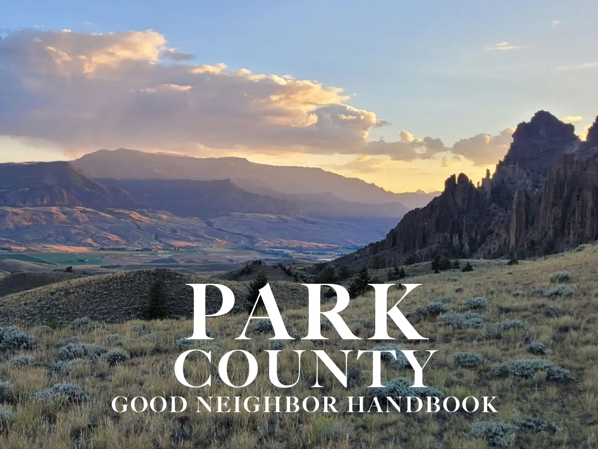
PARK
COUNT Y GOOD NEIGHBOR HANDBOOK
-
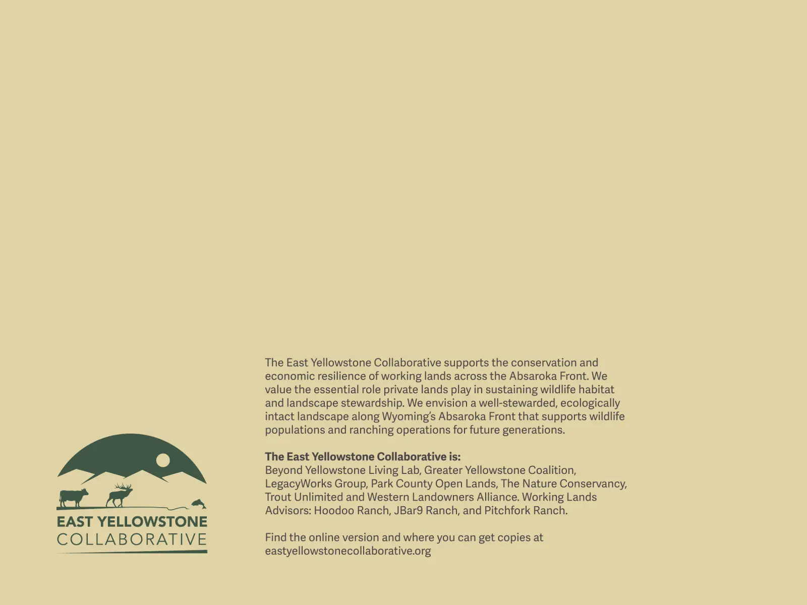
The East Yellowstone Collaborative supports the conservation and economic resilience of working lands across the Absaroka Front. We value the essential role private lands play in sustaining wildlife habitat and landscape stewardship. We envision a well-stewarded, ecologically intact landscape along Wyoming’s Absaroka Front that supports wildlife populations and ranching operations for future generations. The East Yellowstone Collaborative is: Beyond Yellowstone Living Lab, Greater Yellowstone Coalition, LegacyWorks Group, Park County Open Lands, The Nature Conservancy, Trout Unlimited and Western Landowners Alliance. Working Lands Advisors: Hoodoo Ranch, JBar9 Ranch, and Pitchfork Ranch. Find the online version and where you can get copies at eastyellowstonecollaborative.org
-
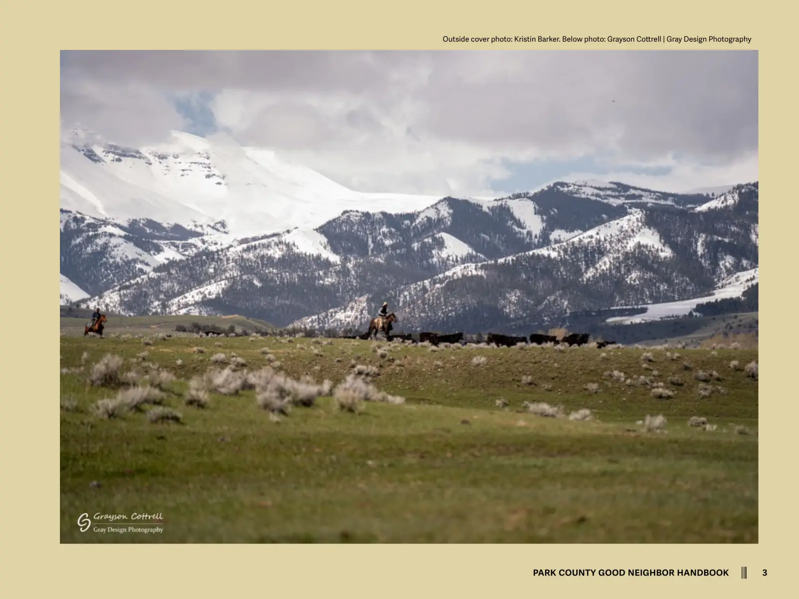
Outside cover photo: Kristin Barker. Below photo: Grayson Cottrell | Gray Design Photography
-
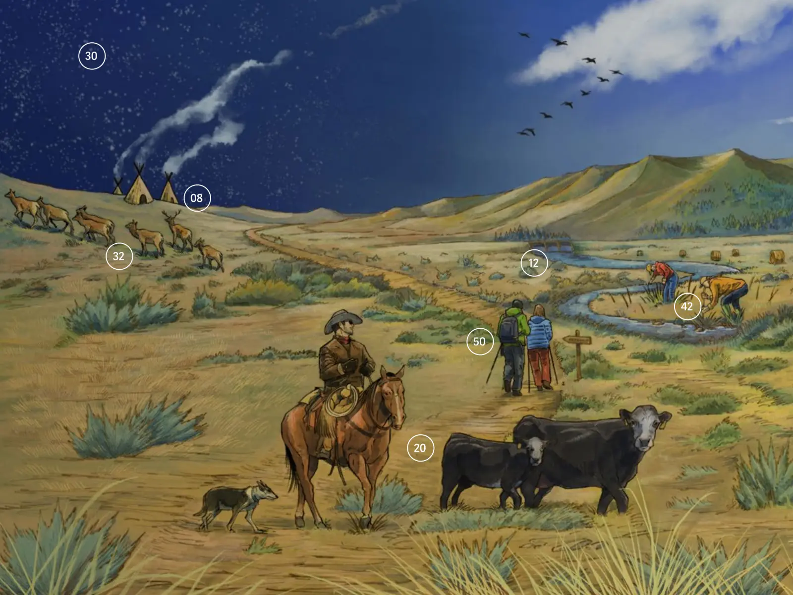
30
08
32
12
42 50
20
-
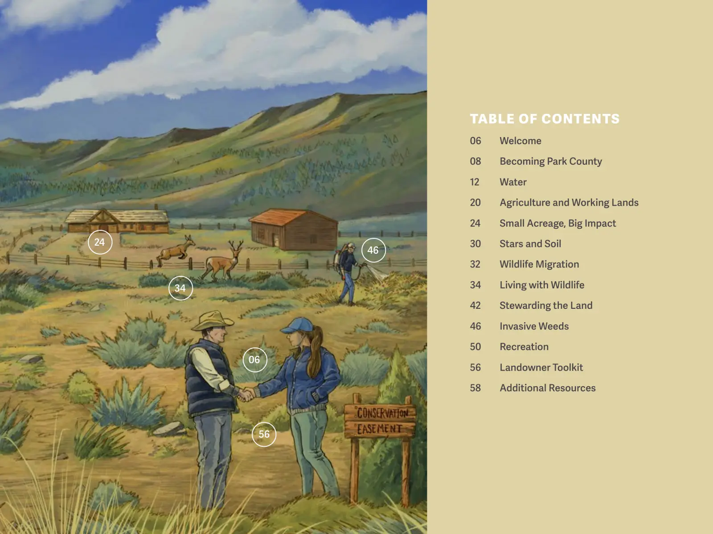
Welcome, page 6Becoming Park County, page 8Water, page 12Agriculture & Working Lands, page 20Small Acreage, Big Impact, page 24Stars & Soil, page 30Wildlife Migration, page 32Living with Wildlife, page 34Stewarding the Land, page 42Invasive Weeds, page 46Recreation, page 50Landowner Toolkit, page 56Additional Resources, page 58TABLE OF CONTENTS
24
46
34
06
56
06
Welcome
08
Becoming Park County
12
Water
20
Agriculture and Working Lands
24
Small Acreage, Big Impact
30
Stars and Soil
32
Wildlife Migration
34
Living with Wildlife
42
Stewarding the Land
46
Invasive Weeds
50
Recreation
56
Landowner Toolkit
58
Additional Resources
-
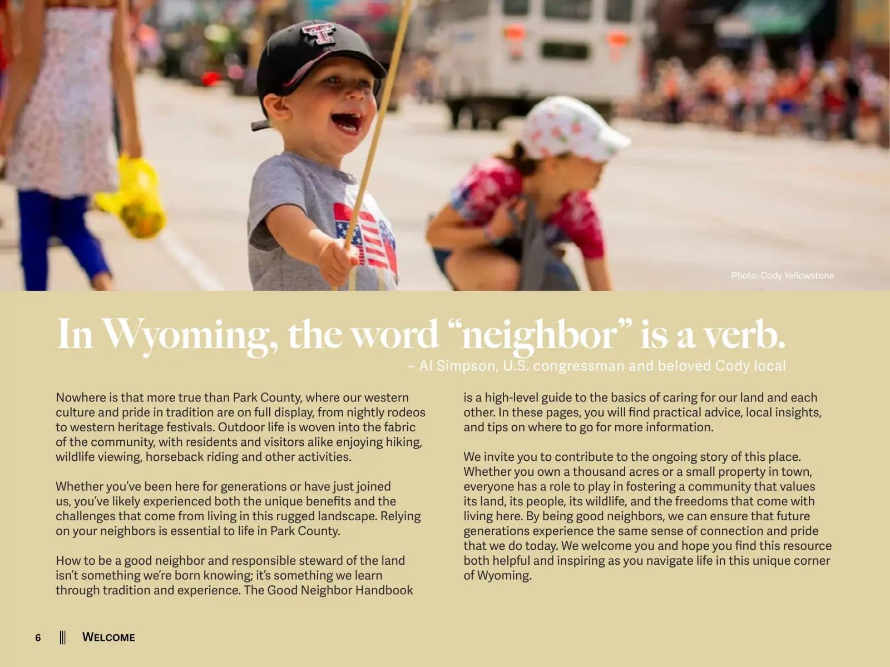
Photo: Cody Yellowstone
In Wyoming, the word “neighbor” is a verb. – Al Simpson, U.S. congressman and beloved Cody local
Nowhere is that more true than Park County, where our western culture and pride in tradition are on full display, from nightly rodeos to western heritage festivals. Outdoor life is woven into the fabric of the community, with residents and visitors alike enjoying hiking, wildlife viewing, horseback riding and other activities. Whether you’ve been here for generations or have just joined us, you’ve likely experienced both the unique benefits and the challenges that come from living in this rugged landscape. Relying on your neighbors is essential to life in Park County. How to be a good neighbor and responsible steward of the land isn’t something we’re born knowing; it’s something we learn through tradition and experience. The Good Neighbor Handbook
is a high-level guide to the basics of caring for our land and each other. In these pages, you will find practical advice, local insights, and tips on where to go for more information. We invite you to contribute to the ongoing story of this place. Whether you own a thousand acres or a small property in town, everyone has a role to play in fostering a community that values its land, its people, its wildlife, and the freedoms that come with living here. By being good neighbors, we can ensure that future generations experience the same sense of connection and pride that we do today. We welcome you and hope you find this resource both helpful and inspiring as you navigate life in this unique corner of Wyoming.
-
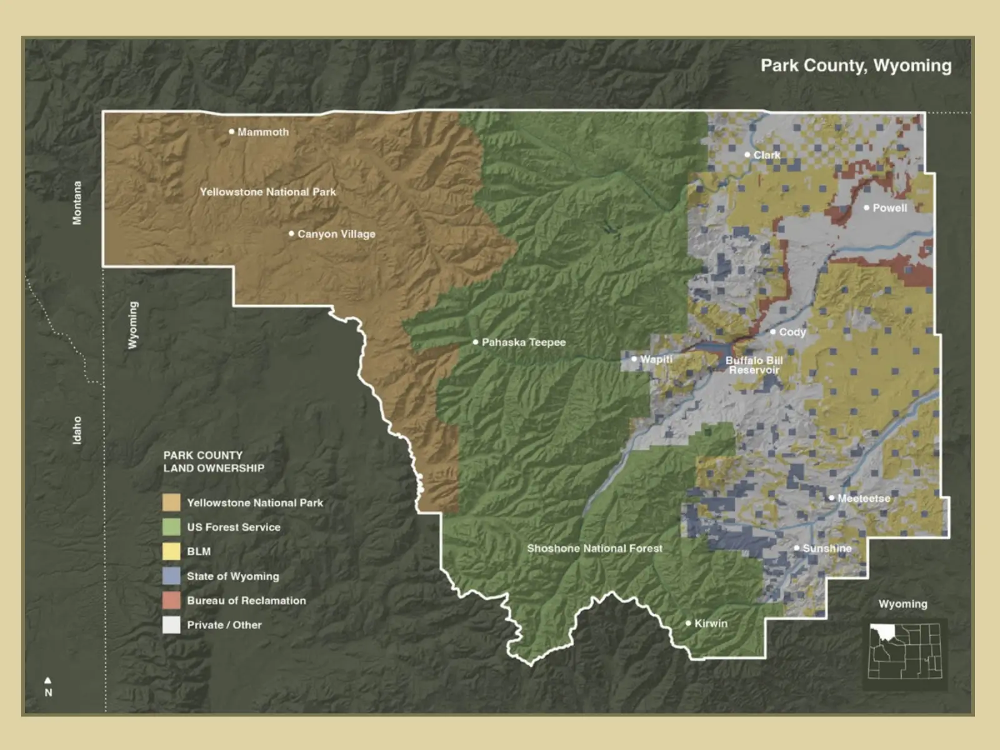
-
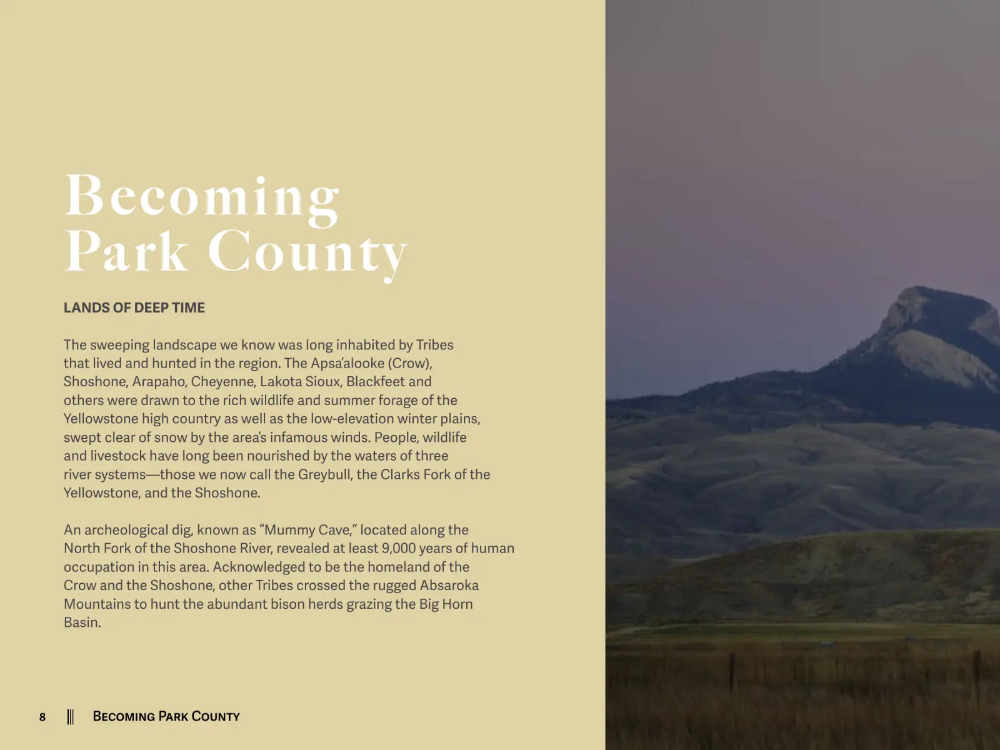
Becoming Park County
Becoming Park County LANDS OF DEEP TIME The sweeping landscape we know was long inhabited by Tribes that lived and hunted in the region. The Apsa’alooke (Crow), Shoshone, Arapaho, Cheyenne, Lakota Sioux, Blackfeet and others were drawn to the rich wildlife and summer forage of the Yellowstone high country as well as the low-elevation winter plains, swept clear of snow by the area’s infamous winds. People, wildlife and livestock have long been nourished by the waters of three river systems—those we now call the Greybull, the Clarks Fork of the Yellowstone, and the Shoshone. An archeological dig, known as “Mummy Cave,” located along the North Fork of the Shoshone River, revealed at least 9,000 years of human occupation in this area. Acknowledged to be the homeland of the Crow and the Shoshone, other Tribes crossed the rugged Absaroka Mountains to hunt the abundant bison herds grazing the Big Horn Basin.
-
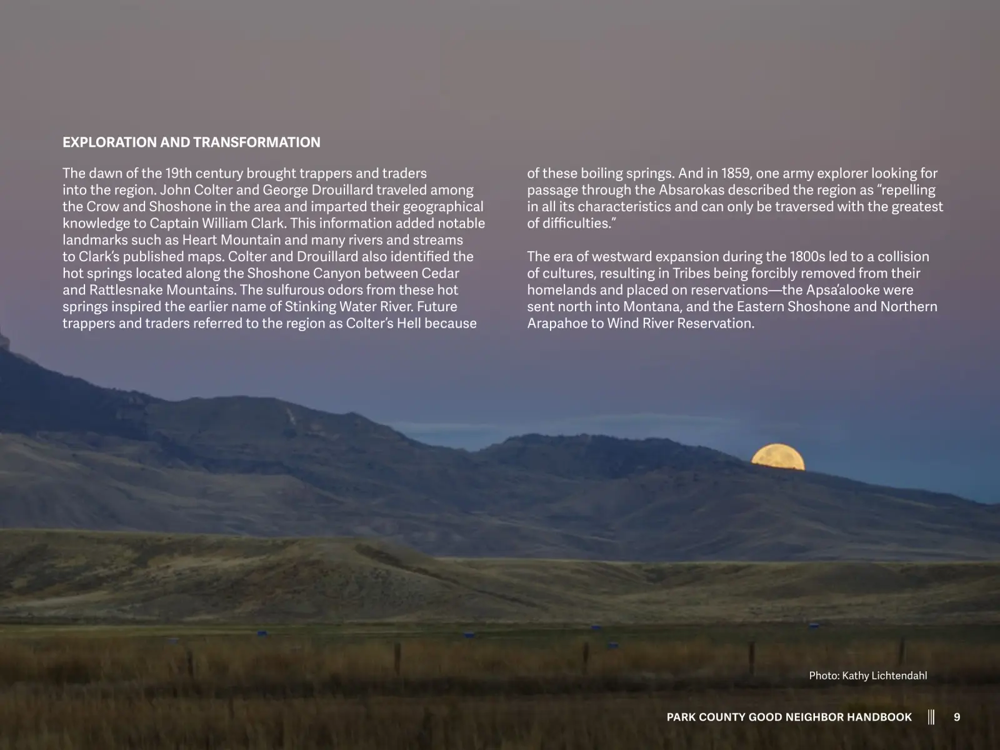
EXPLORATION AND TRANSFORMATION The dawn of the 19th century brought trappers and traders into the region. John Colter and George Drouillard traveled among the Crow and Shoshone in the area and imparted their geographical knowledge to Captain William Clark. This information added notable landmarks such as Heart Mountain and many rivers and streams to Clark’s published maps. Colter and Drouillard also identified the hot springs located along the Shoshone Canyon between Cedar and Rattlesnake Mountains. The sulfurous odors from these hot springs inspired the earlier name of Stinking Water River. Future trappers and traders referred to the region as Colter’s Hell because
of these boiling springs. And in 1859, one army explorer looking for passage through the Absarokas described the region as “repelling in all its characteristics and can only be traversed with the greatest of difficulties.” The era of westward expansion during the 1800s led to a collision of cultures, resulting in Tribes being forcibly removed from their homelands and placed on reservations—the Apsa’alooke were sent north into Montana, and the Eastern Shoshone and Northern Arapahoe to Wind River Reservation.
Photo: Kathy Lichtendahl
-
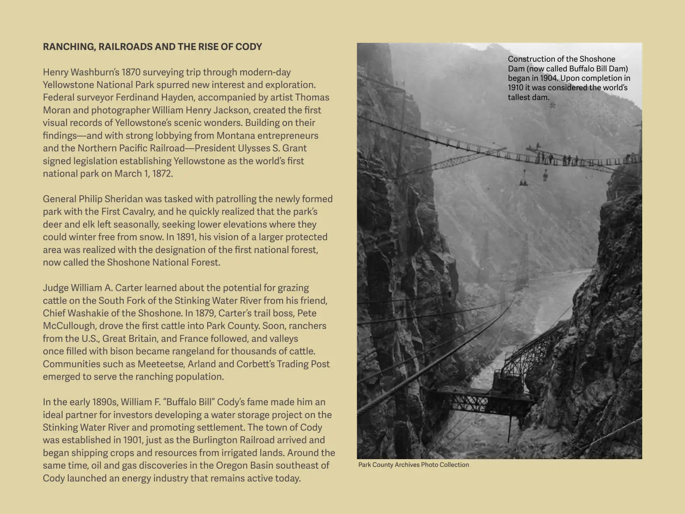
RANCHING, RAILROADS AND THE RISE OF CODY Construction of the Shoshone Dam (now called Buffalo Bill Dam) began in 1904. Upon completion in 1910 it was considered the world’s tallest dam.
Henry Washburn’s 1870 surveying trip through modern-day Yellowstone National Park spurred new interest and exploration. Federal surveyor Ferdinand Hayden, accompanied by artist Thomas Moran and photographer William Henry Jackson, created the first visual records of Yellowstone’s scenic wonders. Building on their findings—and with strong lobbying from Montana entrepreneurs and the Northern Pacific Railroad—President Ulysses S. Grant signed legislation establishing Yellowstone as the world’s first national park on March 1, 1872. General Philip Sheridan was tasked with patrolling the newly formed park with the First Cavalry, and he quickly realized that the park’s deer and elk left seasonally, seeking lower elevations where they could winter free from snow. In 1891, his vision of a larger protected area was realized with the designation of the first national forest, now called the Shoshone National Forest. Judge William A. Carter learned about the potential for grazing cattle on the South Fork of the Stinking Water River from his friend, Chief Washakie of the Shoshone. In 1879, Carter’s trail boss, Pete McCullough, drove the first cattle into Park County. Soon, ranchers from the U.S., Great Britain, and France followed, and valleys once filled with bison became rangeland for thousands of cattle. Communities such as Meeteetse, Arland and Corbett’s Trading Post emerged to serve the ranching population. In the early 1890s, William F. “Buffalo Bill” Cody’s fame made him an ideal partner for investors developing a water storage project on the Stinking Water River and promoting settlement. The town of Cody was established in 1901, just as the Burlington Railroad arrived and began shipping crops and resources from irrigated lands. Around the same time, oil and gas discoveries in the Oregon Basin southeast of
Park County Archives Photo Collection
-
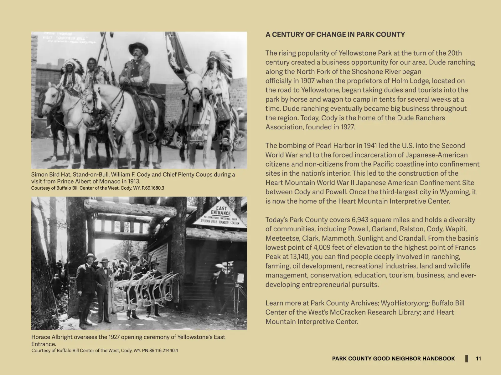
A CENTURY OF CHANGE IN PARK COUNTY The rising popularity of Yellowstone Park at the turn of the 20th century created a business opportunity for our area. Dude ranching along the North Fork of the Shoshone River began officially in 1907 when the proprietors of Holm Lodge, located on the road to Yellowstone, began taking dudes and tourists into the park by horse and wagon to camp in tents for several weeks at a time. Dude ranching eventually became big business throughout the region. Today, Cody is the home of the Dude Ranchers Association, founded in 1927.
Simon Bird Hat, Stand-on-Bull, William F. Cody and Chief Plenty Coups during a visit from Prince Albert of Monaco in 1913. Courtesy of Buffalo Bill Center of the West, Cody, WY. P.69.1680.3
The bombing of Pearl Harbor in 1941 led the U.S. into the Second World War and to the forced incarceration of Japanese-American citizens and non-citizens from the Pacific coastline into confinement sites in the nation’s interior. This led to the construction of the Heart Mountain World War II Japanese American Confinement Site between Cody and Powell. Once the third-largest city in Wyoming, it is now the home of the Heart Mountain Interpretive Center. Today’s Park County covers 6,943 square miles and holds a diversity of communities, including Powell, Garland, Ralston, Cody, Wapiti, Meeteetse, Clark, Mammoth, Sunlight and Crandall. From the basin’s lowest point of 4,009 feet of elevation to the highest point of Francs Peak at 13,140, you can find people deeply involved in ranching, farming, oil development, recreational industries, land and wildlife management, conservation, education, tourism, business, and everdeveloping entrepreneurial pursuits. Learn more at Park County Archives; WyoHistory.org; Buffalo Bill Center of the West’s McCracken Research Library; and Heart Mountain Interpretive Center.
Horace Albright oversees the 1927 opening ceremony of Yellowstone's East
-
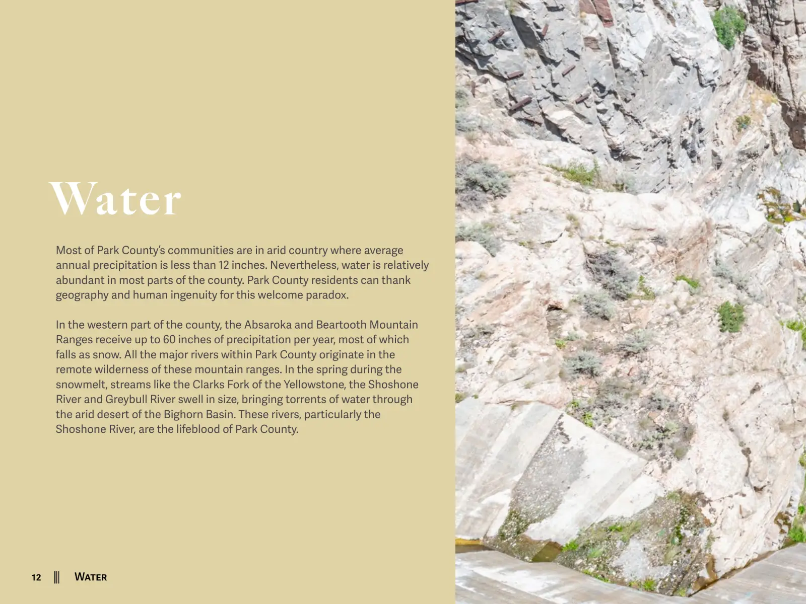
Water Most of Park County’s communities are in arid country where average annual precipitation is less than 12 inches. Nevertheless, water is relatively abundant in most parts of the county. Park County residents can thank geography and human ingenuity for this welcome paradox. In the western part of the county, the Absaroka and Beartooth Mountain Ranges receive up to 60 inches of precipitation per year, most of which falls as snow. All the major rivers within Park County originate in the remote wilderness of these mountain ranges. In the spring during the snowmelt, streams like the Clarks Fork of the Yellowstone, the Shoshone River and Greybull River swell in size, bringing torrents of water through the arid desert of the Bighorn Basin. These rivers, particularly the Shoshone River, are the lifeblood of Park County.
-
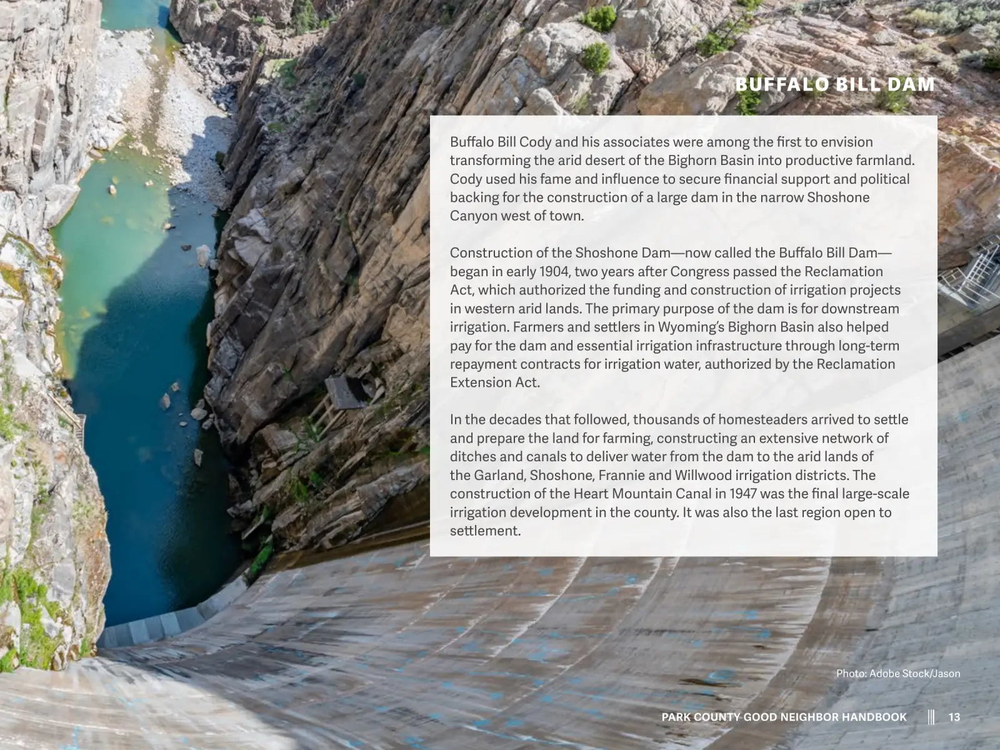
B U FFA LO B I LL DA M Buffalo Bill Cody and his associates were among the first to envision transforming the arid desert of the Bighorn Basin into productive farmland. Cody used his fame and influence to secure financial support and political backing for the construction of a large dam in the narrow Shoshone Canyon west of town. Construction of the Shoshone Dam—now called the Buffalo Bill Dam— began in early 1904, two years after Congress passed the Reclamation Act, which authorized the funding and construction of irrigation projects in western arid lands. The primary purpose of the dam is for downstream irrigation. Farmers and settlers in Wyoming’s Bighorn Basin also helped pay for the dam and essential irrigation infrastructure through long-term repayment contracts for irrigation water, authorized by the Reclamation Extension Act. In the decades that followed, thousands of homesteaders arrived to settle and prepare the land for farming, constructing an extensive network of ditches and canals to deliver water from the dam to the arid lands of the Garland, Shoshone, Frannie and Willwood irrigation districts. The construction of the Heart Mountain Canal in 1947 was the final large-scale irrigation development in the county. It was also the last region open to settlement.
Photo: Adobe Stock/Jason
-
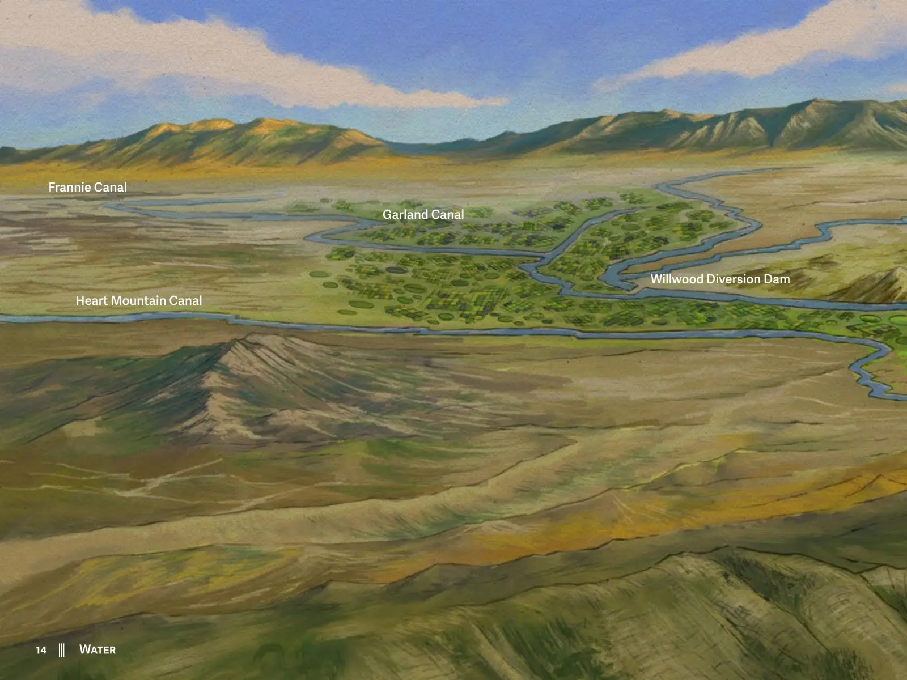
Frannie Canal Garland Canal
Willwood Diversion Dam Heart Mountain Canal
-
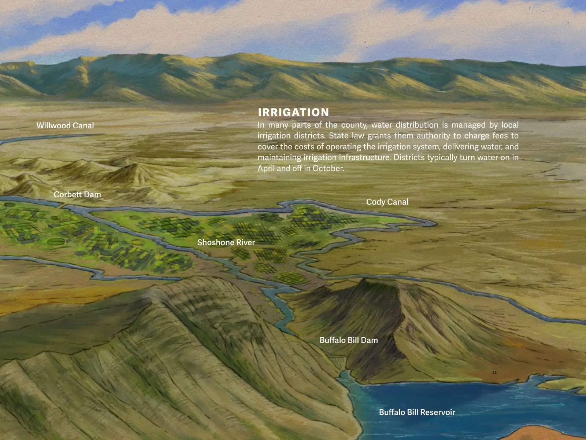
IRRIGATION In many parts of the county, water distribution is managed by local irrigation districts. State law grants them authority to charge fees to cover the costs of operating the irrigation system, delivering water, and maintaining irrigation infrastructure. Districts typically turn water on in April and off in October.
Willwood Canal
Corbett Dam
Cody Canal
Shoshone River
Buffalo Bill Dam
11
-
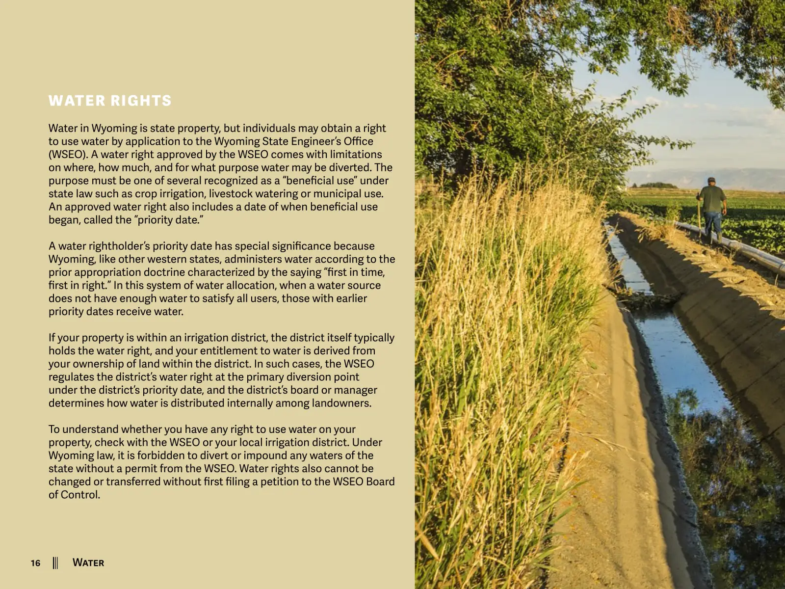
WATER R I GHTS Water in Wyoming is state property, but individuals may obtain a right to use water by application to the Wyoming State Engineer’s Office (WSEO). A water right approved by the WSEO comes with limitations on where, how much, and for what purpose water may be diverted. The purpose must be one of several recognized as a “beneficial use” under state law such as crop irrigation, livestock watering or municipal use. An approved water right also includes a date of when beneficial use began, called the “priority date.” A water rightholder’s priority date has special significance because Wyoming, like other western states, administers water according to the prior appropriation doctrine characterized by the saying “first in time, first in right.” In this system of water allocation, when a water source does not have enough water to satisfy all users, those with earlier priority dates receive water. If your property is within an irrigation district, the district itself typically holds the water right, and your entitlement to water is derived from your ownership of land within the district. In such cases, the WSEO regulates the district’s water right at the primary diversion point under the district’s priority date, and the district’s board or manager determines how water is distributed internally among landowners. To understand whether you have any right to use water on your property, check with the WSEO or your local irrigation district. Under Wyoming law, it is forbidden to divert or impound any waters of the state without a permit from the WSEO. Water rights also cannot be changed or transferred without first filing a petition to the WSEO Board of Control.
-
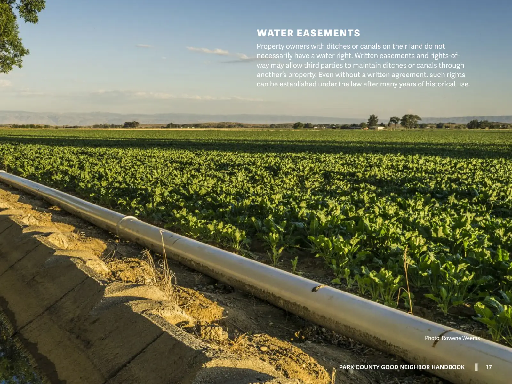
WATER EASEMENTS Property owners with ditches or canals on their land do not necessarily have a water right. Written easements and rights-ofway may allow third parties to maintain ditches or canals through another’s property. Even without a written agreement, such rights can be established under the law after many years of historical use.
Photo: Rowene Weems
-
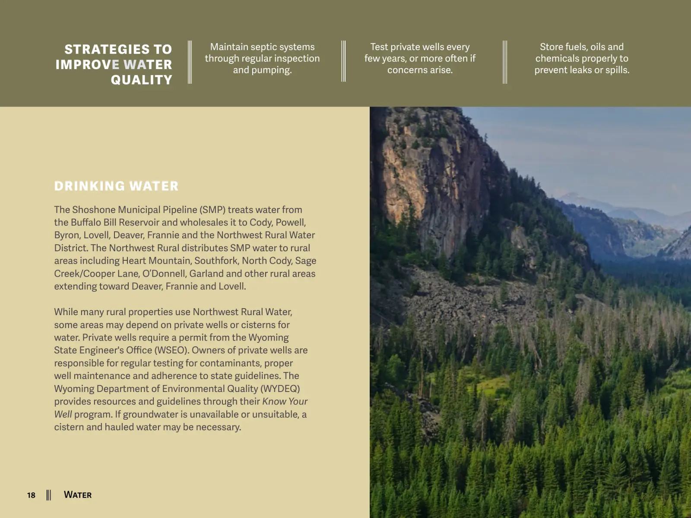
STRATEGIES TO IMPROVE WATER QUALITY
Maintain septic systems through regular inspection and pumping.
DRINKING WATER The Shoshone Municipal Pipeline (SMP) treats water from the Buffalo Bill Reservoir and wholesales it to Cody, Powell, Byron, Lovell, Deaver, Frannie and the Northwest Rural Water District. The Northwest Rural distributes SMP water to rural areas including Heart Mountain, Southfork, North Cody, Sage Creek/Cooper Lane, O’Donnell, Garland and other rural areas extending toward Deaver, Frannie and Lovell. While many rural properties use Northwest Rural Water, some areas may depend on private wells or cisterns for water. Private wells require a permit from the Wyoming State Engineer's Office (WSEO). Owners of private wells are responsible for regular testing for contaminants, proper well maintenance and adherence to state guidelines. The Wyoming Department of Environmental Quality (WYDEQ) provides resources and guidelines through their Know Your Well program. If groundwater is unavailable or unsuitable, a cistern and hauled water may be necessary.
Test private wells every few years, or more often if concerns arise.
Store fuels, oils and chemicals properly to prevent leaks or spills.
-
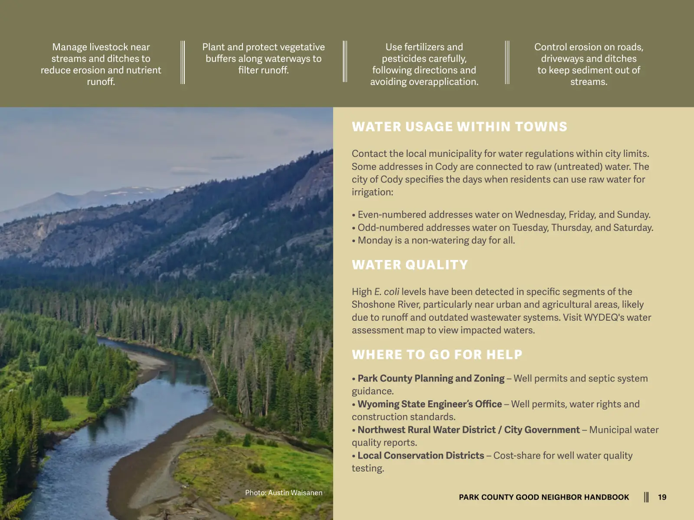
Manage livestock near streams and ditches to reduce erosion and nutrient runoff.
Plant and protect vegetative buffers along waterways to filter runoff.
Use fertilizers and pesticides carefully, following directions and avoiding overapplication.
Control erosion on roads, driveways and ditches to keep sediment out of streams.
WATER USAGE WITHIN TOWNS Contact the local municipality for water regulations within city limits. Some addresses in Cody are connected to raw (untreated) water. The city of Cody specifies the days when residents can use raw water for irrigation: • Even-numbered addresses water on Wednesday, Friday, and Sunday. • Odd-numbered addresses water on Tuesday, Thursday, and Saturday. • Monday is a non-watering day for all.
WATER QUALITY High E. coli levels have been detected in specific segments of the Shoshone River, particularly near urban and agricultural areas, likely due to runoff and outdated wastewater systems. Visit WYDEQ's water assessment map to view impacted waters.
WHERE TO GO FOR HELP • Park County Planning and Zoning – Well permits and septic system guidance. • Wyoming State Engineer’s Office – Well permits, water rights and construction standards. • Northwest Rural Water District / City Government – Municipal water quality reports. • Local Conservation Districts – Cost-share for well water quality testing.
-
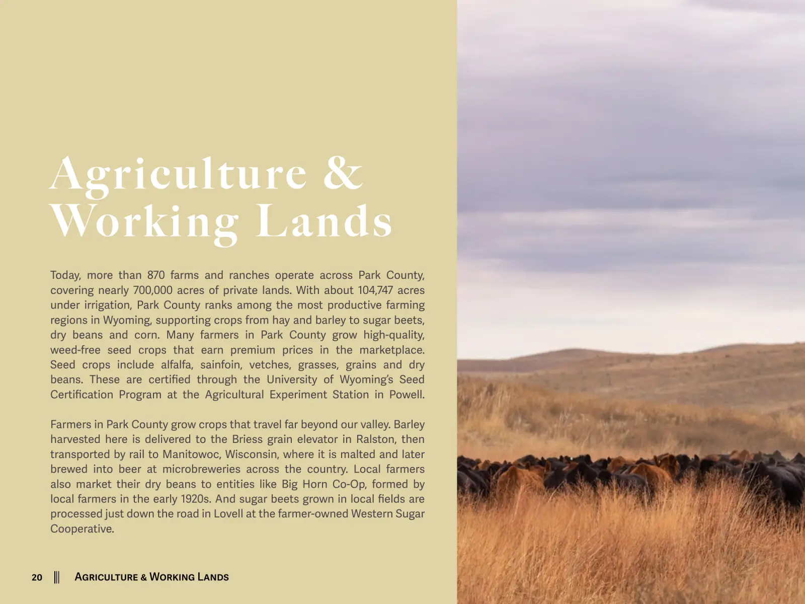
Agriculture & Working L ands Today, more than 870 farms and ranches operate across Park County, covering nearly 700,000 acres of private lands. With about 104,747 acres under irrigation, Park County ranks among the most productive farming regions in Wyoming, supporting crops from hay and barley to sugar beets, dry beans and corn. Many farmers in Park County grow high-quality, weed-free seed crops that earn premium prices in the marketplace. Seed crops include alfalfa, sainfoin, vetches, grasses, grains and dry beans. These are certified through the University of Wyoming’s Seed Certification Program at the Agricultural Experiment Station in Powell. Farmers in Park County grow crops that travel far beyond our valley. Barley harvested here is delivered to the Briess grain elevator in Ralston, then transported by rail to Manitowoc, Wisconsin, where it is malted and later brewed into beer at microbreweries across the country. Local farmers also market their dry beans to entities like Big Horn Co-Op, formed by local farmers in the early 1920s. And sugar beets grown in local fields are processed just down the road in Lovell at the farmer-owned Western Sugar Cooperative.
-
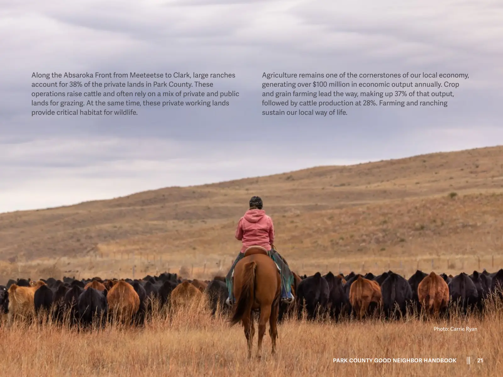
Along the Absaroka Front from Meeteetse to Clark, large ranches account for 38% of the private lands in Park County. These operations raise cattle and often rely on a mix of private and public lands for grazing. At the same time, these private working lands provide critical habitat for wildlife.
Agriculture remains one of the cornerstones of our local economy, generating over $100 million in economic output annually. Crop and grain farming lead the way, making up 37% of that output, followed by cattle production at 28%. Farming and ranching sustain our local way of life.
Photo: Carrie Ryan
-
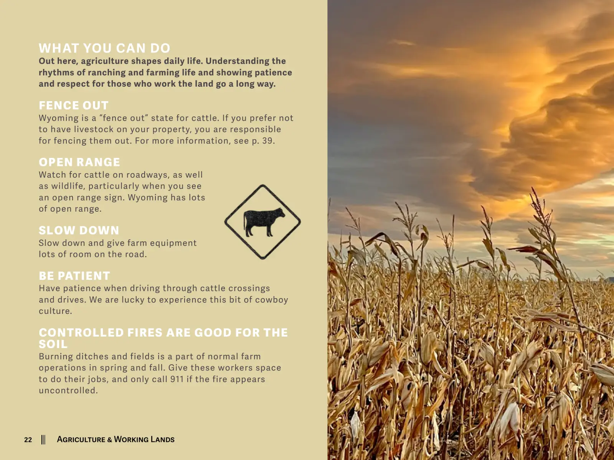
WHAT YOU CAN DO
Out here, agriculture shapes daily life. Understanding the rhythms of ranching and farming life and showing patience and respect for those who work the land go a long way.
FENCE OUT Wyoming is a “fence out” state for cattle. If you prefer not to have livestock on your property, you are responsible for fencing them out. For more information, see p. 39.
OPEN RANGE Watch for cattle on roadways, as well as wildlife, particularly when you see an open range sign. Wyoming has lots of open range.
SLOW DOWN Slow down and give farm equipment lots of room on the road.
BE PATIENT Have patience when driving through cattle crossings and drives. We are lucky to experience this bit of cowboy culture.
CONTROLLED FIRES ARE GOOD FOR THE SOIL Burning ditches and fields is a part of normal farm operations in spring and fall. Give these workers space to do their jobs, and only call 911 if the fire appears uncontrolled.
-
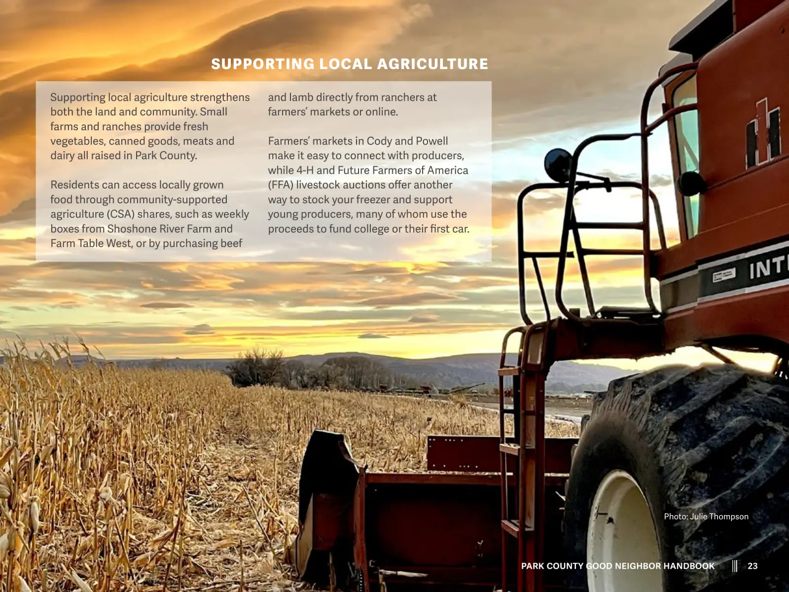
SUPPORTING LOCAL AGRICULTURE Supporting local agriculture strengthens both the land and community. Small farms and ranches provide fresh vegetables, canned goods, meats and dairy all raised in Park County. Residents can access locally grown food through community-supported agriculture (CSA) shares, such as weekly boxes from Shoshone River Farm and Farm Table West, or by purchasing beef
and lamb directly from ranchers at farmers’ markets or online. Farmers’ markets in Cody and Powell make it easy to connect with producers, while 4-H and Future Farmers of America (FFA) livestock auctions offer another way to stock your freezer and support young producers, many of whom use the proceeds to fund college or their first car.
Photo: Julie Thompson
-
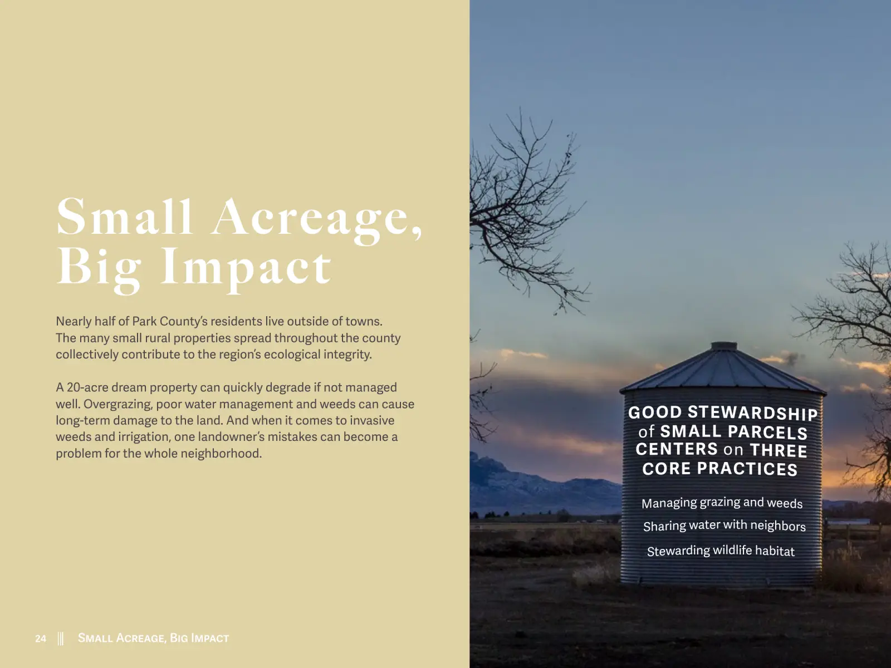
Small Acreage, Big Impact Nearly half of Park County’s residents live outside of towns. The many small rural properties spread throughout the county collectively contribute to the region’s ecological integrity. A 20-acre dream property can quickly degrade if not managed well. Overgrazing, poor water management and weeds can cause long-term damage to the land. And when it comes to invasive weeds and irrigation, one landowner’s mistakes can become a problem for the whole neighborhood.
GO OD STEWA RD SH IP of SMALL PAR CE L S CEN TERS on TH RE E CO RE PRACT IC ES Managing grazing and weeds Sharing water with neighbors Stewarding wildlife habitat
-
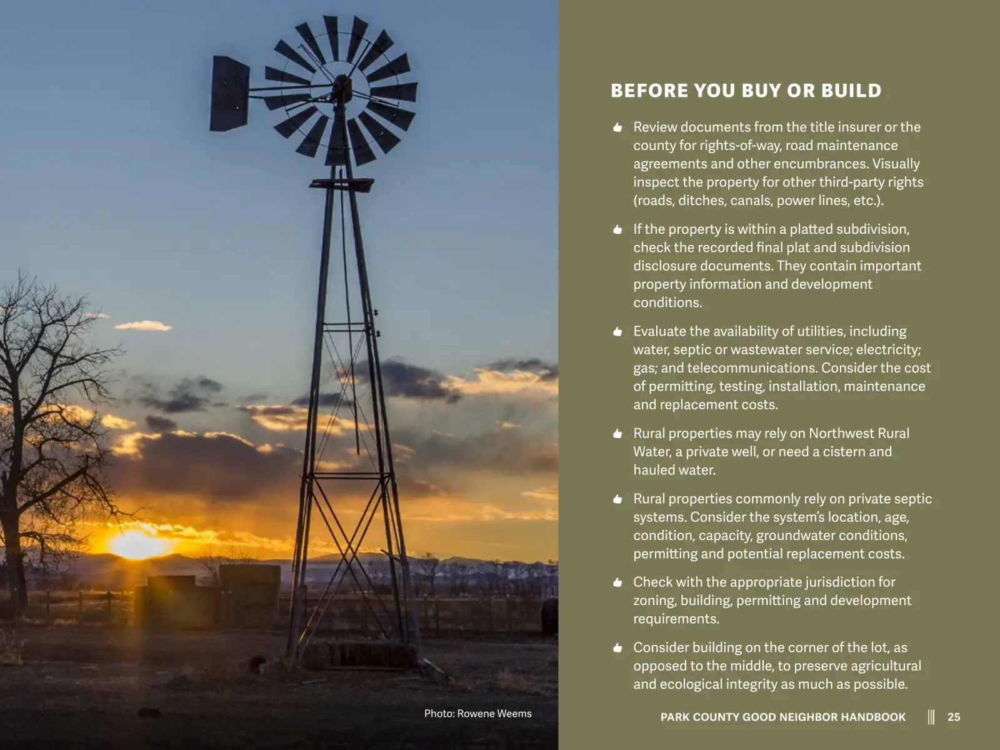
BEFORE YOU BUY OR BUILD ΄ Review documents from the title insurer or the county for rights-of-way, road maintenance agreements and other encumbrances. Visually inspect the property for other third-party rights (roads, ditches, canals, power lines, etc.). ΄ If the property is within a platted subdivision, check the recorded final plat and subdivision disclosure documents. They contain important property information and development conditions. ΄ Evaluate the availability of utilities, including water, septic or wastewater service; electricity; gas; and telecommunications. Consider the cost of permitting, testing, installation, maintenance and replacement costs. ΄ Rural properties may rely on Northwest Rural Water, a private well, or need a cistern and hauled water. ΄ Rural properties commonly rely on private septic systems. Consider the system’s location, age, condition, capacity, groundwater conditions, permitting and potential replacement costs. ΄ Check with the appropriate jurisdiction for zoning, building, permitting and development requirements. ΄ Consider building on the corner of the lot, as opposed to the middle, to preserve agricultural and ecological integrity as much as possible.
-
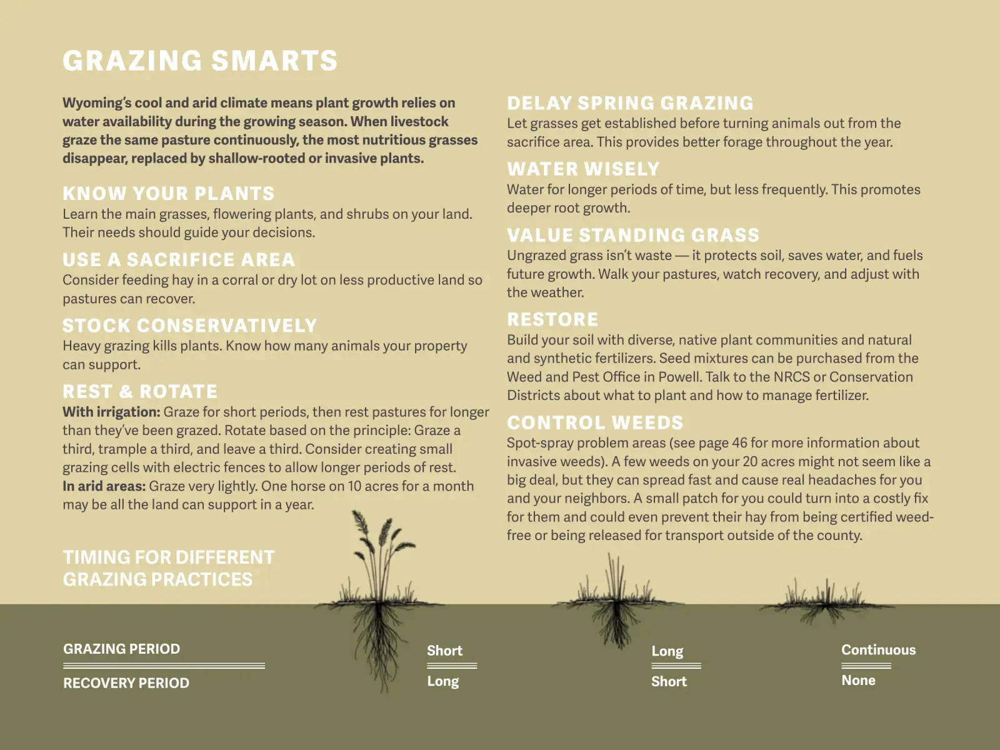
GRAZING SMARTS DELAY SPRING GRAZING
Wyoming’s cool and arid climate means plant growth relies on water availability during the growing season. When livestock graze the same pasture continuously, the most nutritious grasses disappear, replaced by shallow-rooted or invasive plants.
Let grasses get established before turning animals out from the sacrifice area. This provides better forage throughout the year.
KNOW YOUR PLANTS
Water for longer periods of time, but less frequently. This promotes deeper root growth.
Learn the main grasses, flowering plants, and shrubs on your land. Their needs should guide your decisions.
WATER WISELY VALUE STANDING GRASS
Consider feeding hay in a corral or dry lot on less productive land so pastures can recover.
Ungrazed grass isn’t waste — it protects soil, saves water, and fuels future growth. Walk your pastures, watch recovery, and adjust with the weather.
STOCK CONSERVATIVELY
RESTORE
USE A SACRIFICE AREA
Heavy grazing kills plants. Know how many animals your property can support.
REST & ROTATE
With irrigation: Graze for short periods, then rest pastures for longer than they’ve been grazed. Rotate based on the principle: Graze a third, trample a third, and leave a third. Consider creating small grazing cells with electric fences to allow longer periods of rest. In arid areas: Graze very lightly. One horse on 10 acres for a month may be all the land can support in a year.
Build your soil with diverse, native plant communities and natural and synthetic fertilizers. Seed mixtures can be purchased from the Weed and Pest Office in Powell. Talk to the NRCS or Conservation Districts about what to plant and how to manage fertilizer.
CONTROL WEEDS Spot-spray problem areas (see page 46 for more information about invasive weeds). A few weeds on your 20 acres might not seem like a big deal, but they can spread fast and cause real headaches for you and your neighbors. A small patch for you could turn into a costly fix for them and could even prevent their hay from being certified weedfree or being released for transport outside of the county.
TIMING FOR DIFFERENT GRAZING PRACTICES
GRAZING PERIOD
Short
Long
Continuous
RECOVERY PERIOD
Long
Short
None
-
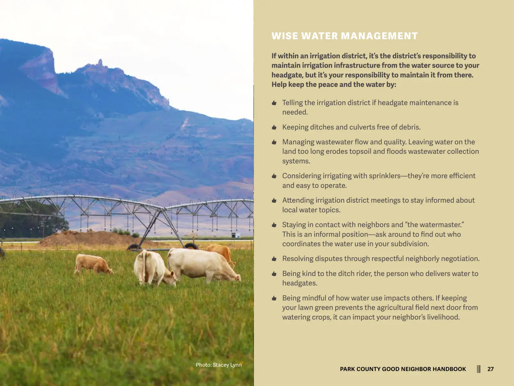
WISE WATER MANAGEMENT If within an irrigation district, it’s the district’s responsibility to maintain irrigation infrastructure from the water source to your headgate, but it’s your responsibility to maintain it from there. Help keep the peace and the water by: ΄ Telling the irrigation district if headgate maintenance is needed. ΄ Keeping ditches and culverts free of debris. ΄ Managing wastewater flow and quality. Leaving water on the land too long erodes topsoil and floods wastewater collection systems. ΄ Considering irrigating with sprinklers—they’re more efficient and easy to operate. ΄ Attending irrigation district meetings to stay informed about local water topics. ΄ Staying in contact with neighbors and “the watermaster.” This is an informal position—ask around to find out who coordinates the water use in your subdivision. ΄ Resolving disputes through respectful neighborly negotiation. ΄ Being kind to the ditch rider, the person who delivers water to headgates. ΄ Being mindful of how water use impacts others. If keeping your lawn green prevents the agricultural field next door from watering crops, it can impact your neighbor’s livelihood.
-
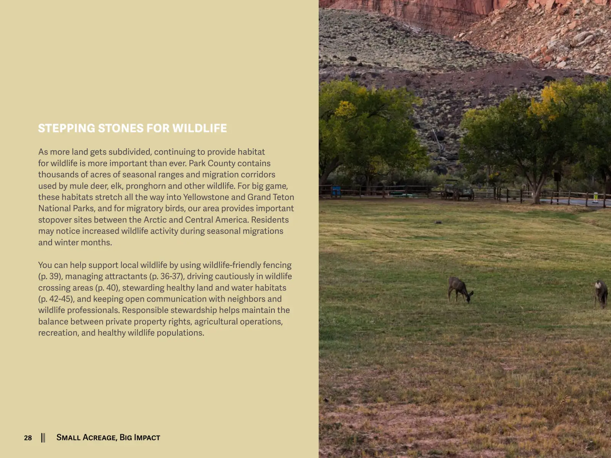
STEPPING STONES FOR WILDLIFE As more land gets subdivided, continuing to provide habitat for wildlife is more important than ever. Park County contains thousands of acres of seasonal ranges and migration corridors used by mule deer, elk, pronghorn and other wildlife. For big game, these habitats stretch all the way into Yellowstone and Grand Teton National Parks, and for migratory birds, our area provides important stopover sites between the Arctic and Central America. Residents may notice increased wildlife activity during seasonal migrations and winter months. You can help support local wildlife by using wildlife-friendly fencing (p. 39), managing attractants (p. 36-37), driving cautiously in wildlife crossing areas (p. 40), stewarding healthy land and water habitats (p. 42-45), and keeping open communication with neighbors and wildlife professionals. Responsible stewardship helps maintain the balance between private property rights, agricultural operations, recreation, and healthy wildlife populations.
-
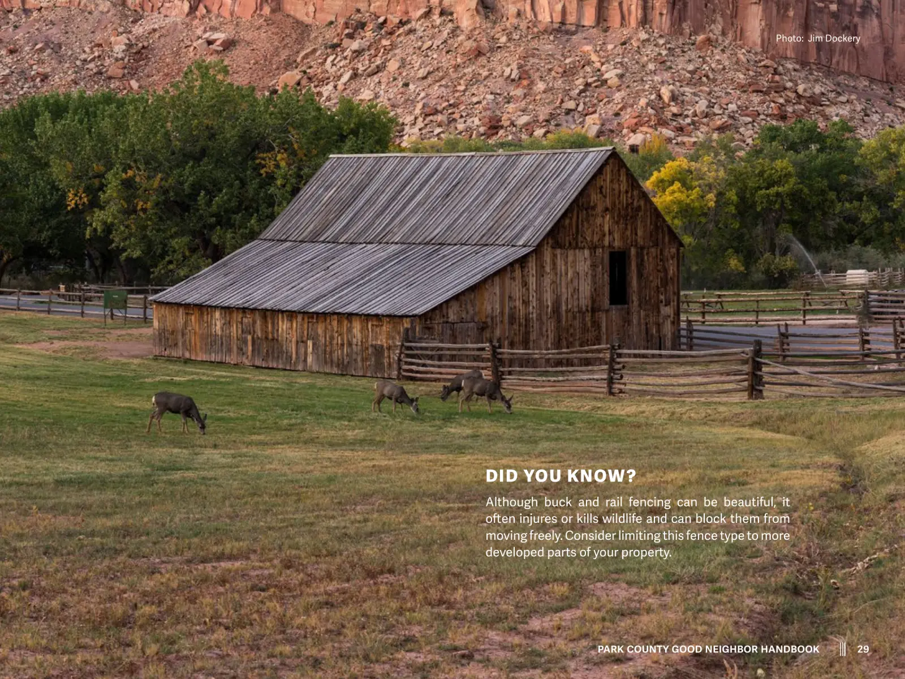
Photo: Jim Dockery
BUCK AND RAIL FENCING IS BEAUTIFUL, BUT... It can injure wildlife and block them from moving freely. Consider limiting it to the more developed parts of your property.
DID YOU KNOW? Although buck and rail fencing can be beautiful, it often injures or kills wildlife and can block them from moving freely. Consider limiting this fence type to more developed parts of your property.
Photo: Dewey Vanderhoff
-
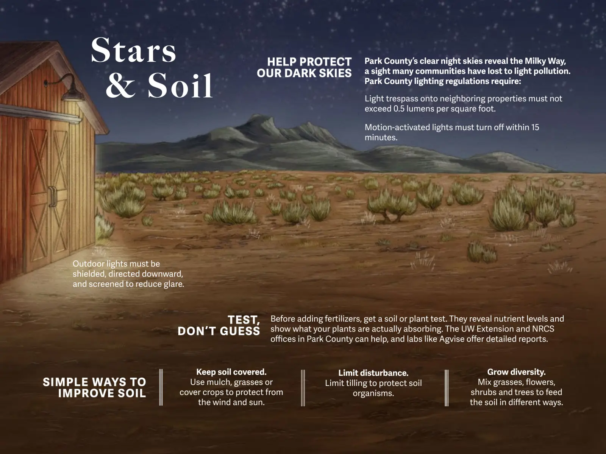
Stars & Soil
HELP PROTECT OUR DARK SKIES
Park County’s clear night skies reveal the Milky Way, a sight many communities have lost to light pollution. Park County lighting regulations require: Light trespass onto neighboring properties must not exceed 0.5 lumens per square foot. Motion-activated lights must turn off within 15 minutes.
Outdoor lights must be shielded, directed downward, and screened to reduce glare.
TEST, DON’ T GUESS
SIMPLE WAYS TO IMPROVE SOIL
Before adding fertilizers, get a soil or plant test. They reveal nutrient levels and show what your plants are actually absorbing. The UW Extension and NRCS offices in Park County can help, and labs like Agvise offer detailed reports.
Keep soil covered. Use mulch, grasses or cover crops to protect from the wind and sun.
Limit disturbance. Limit tilling to protect soil organisms.
Grow diversity. Mix grasses, flowers, shrubs and trees to feed the soil in different ways.
-
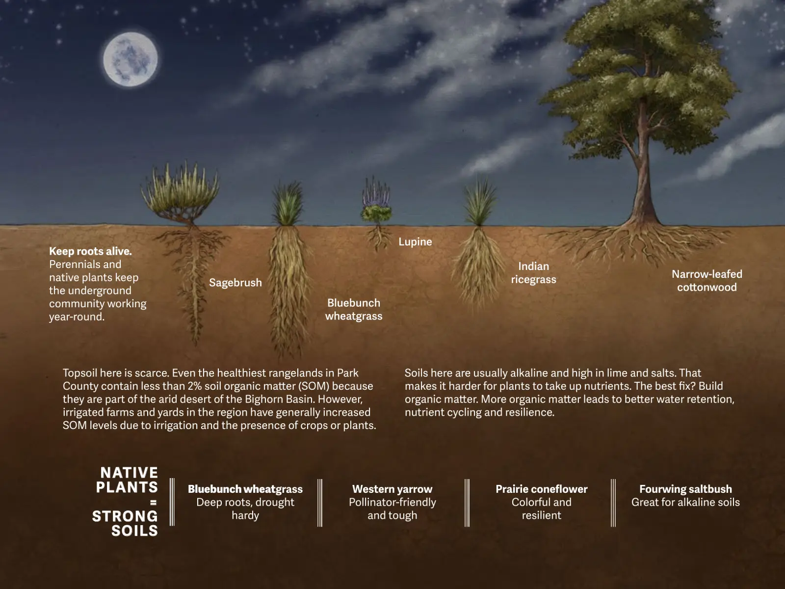
Keep roots alive. Perennials and native plants keep the underground community working year-round.
Lupine Indian ricegrass
Sagebrush Bluebunch wheatgrass
Topsoil here is scarce. Even the healthiest rangelands in Park County contain less than 2% soil organic matter (SOM) because they are part of the arid desert of the Bighorn Basin. However, irrigated farms and yards in the region have generally increased SOM levels due to irrigation and the presence of crops or plants.
NATIVE PLANTS = STRONG SOILS
Narrow-leafed cottonwood
Bluebunch wheatgrass Deep roots, drought hardy
Soils here are usually alkaline and high in lime and salts. That makes it harder for plants to take up nutrients. The best fix? Build organic matter. More organic matter leads to better water retention, nutrient cycling and resilience.
Western yarrow Pollinator-friendly and tough
Prairie coneflower Colorful and resilient
Fourwing saltbush Great for alkaline soils
-
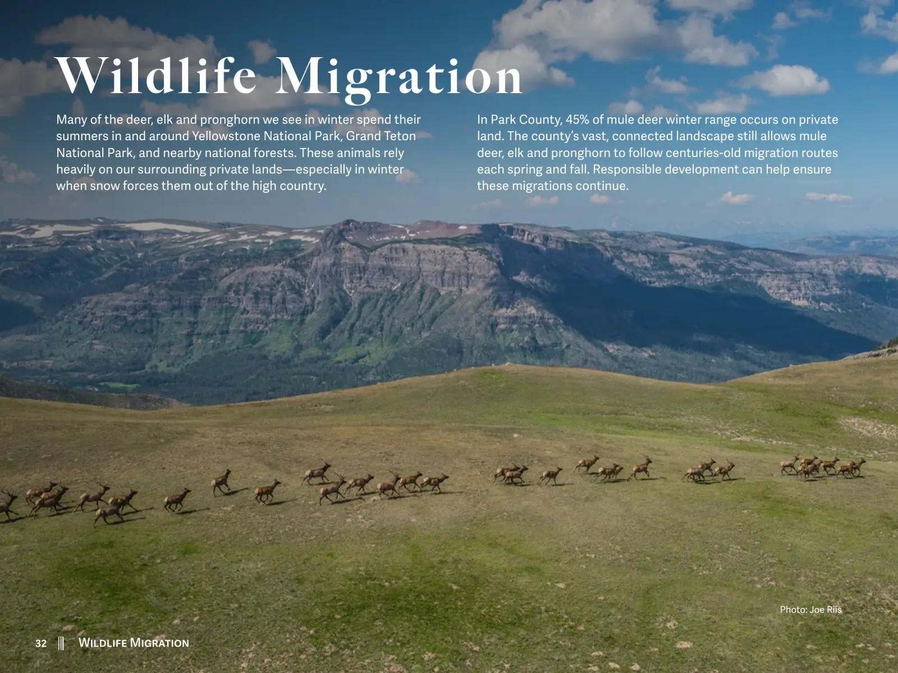
Wildlife Migration Many of the deer, elk and pronghorn we see in winter spend their summers in and around Yellowstone National Park, Grand Teton National Park, and nearby national forests. These animals rely heavily on our surrounding private lands—especially in winter when snow forces them out of the high country.
In Park County, 45% of mule deer winter range occurs on private land. The county’s vast, connected landscape still allows mule deer, elk and pronghorn to follow centuries-old migration routes each spring and fall. Responsible development can help ensure these migrations continue.
Photo: Joe Riis
-
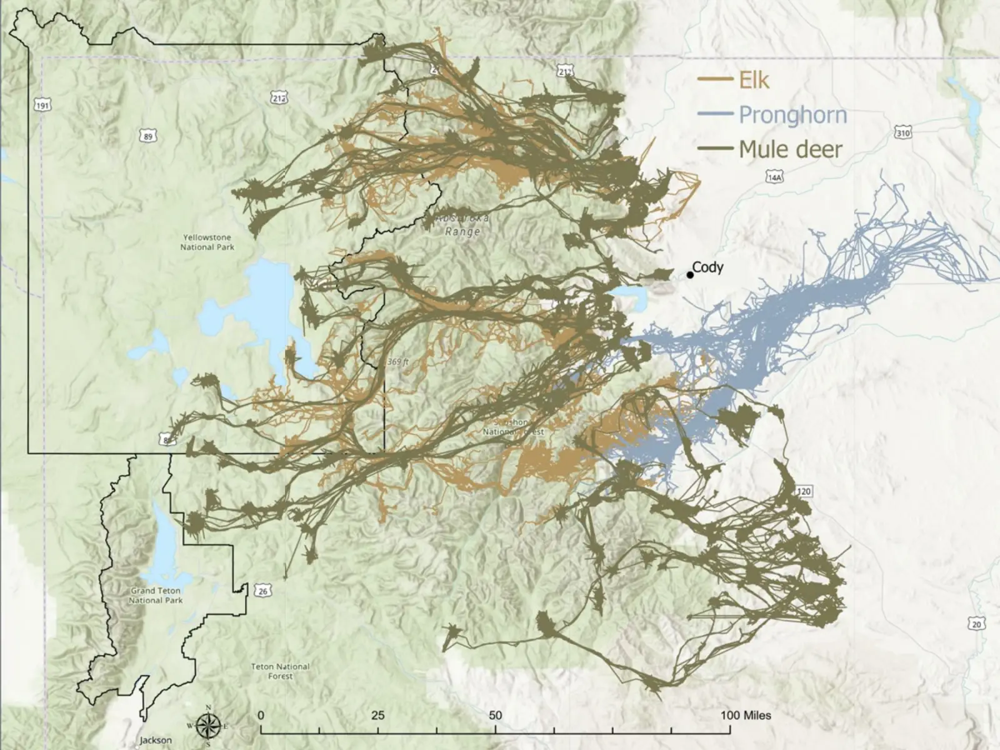
-
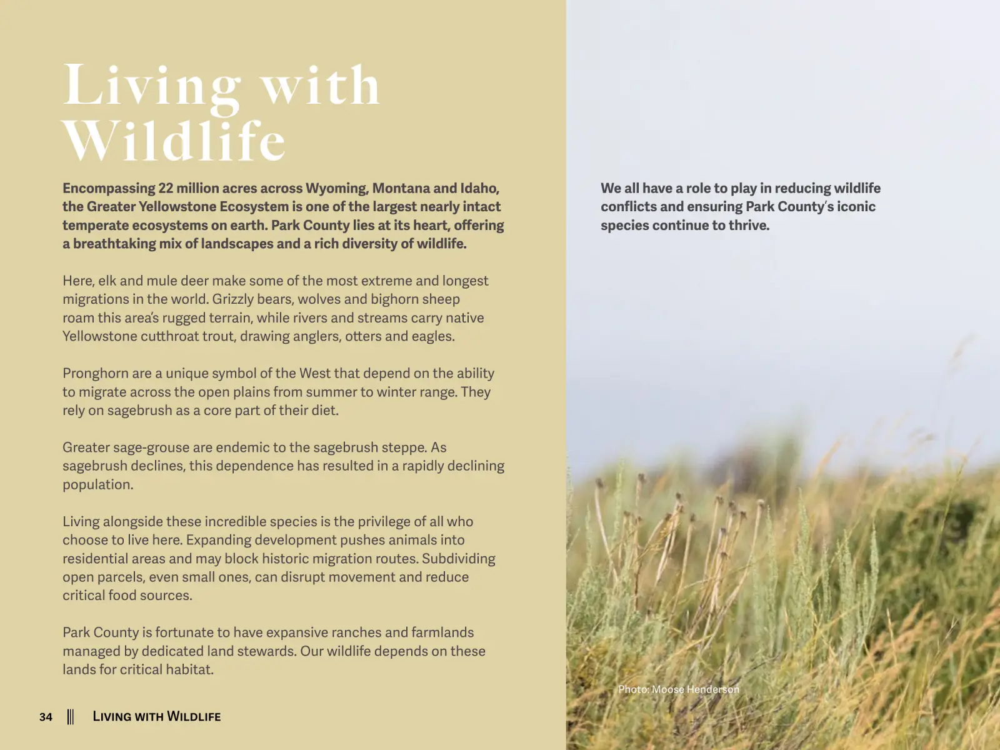
Living with Wildlife Encompassing 22 million acres across Wyoming, Montana and Idaho, the Greater Yellowstone Ecosystem is one of the largest nearly intact temperate ecosystems on earth. Park County lies at its heart, offering a breathtaking mix of landscapes and a rich diversity of wildlife. Here, elk and mule deer make some of the most extreme and longest migrations in the world. Grizzly bears, wolves and bighorn sheep roam this area’s rugged terrain, while rivers and streams carry native Yellowstone cutthroat trout, drawing anglers, otters and eagles. Pronghorn are a unique symbol of the West that depend on the ability to migrate across the open plains from summer to winter range. They rely on sagebrush as a core part of their diet. Greater sage-grouse are endemic to the sagebrush steppe. As sagebrush declines, this dependence has resulted in a rapidly declining population. Living alongside these incredible species is the privilege of all who choose to live here. Expanding development pushes animals into residential areas and may block historic migration routes. Subdividing open parcels, even small ones, can disrupt movement and reduce critical food sources. Park County is fortunate to have expansive ranches and farmlands managed by dedicated land stewards. Our wildlife depends on these lands for critical habitat.
We all have a role to play in reducing wildlife conflicts and ensuring Park County’s iconic species continue to thrive.
-
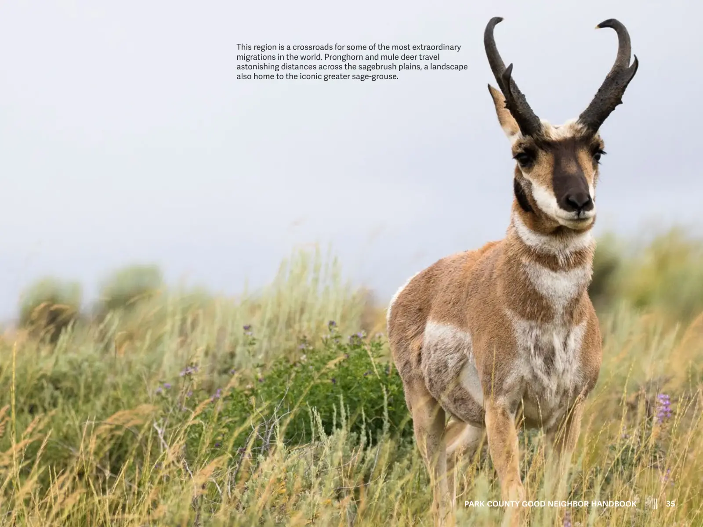
This region is a crossroads for some of the most extraordinary migrations in the world. Pronghorn and mule deer travel astonishing distances across the sagebrush plains, a landscape also home to the iconic greater sage-grouse.
-
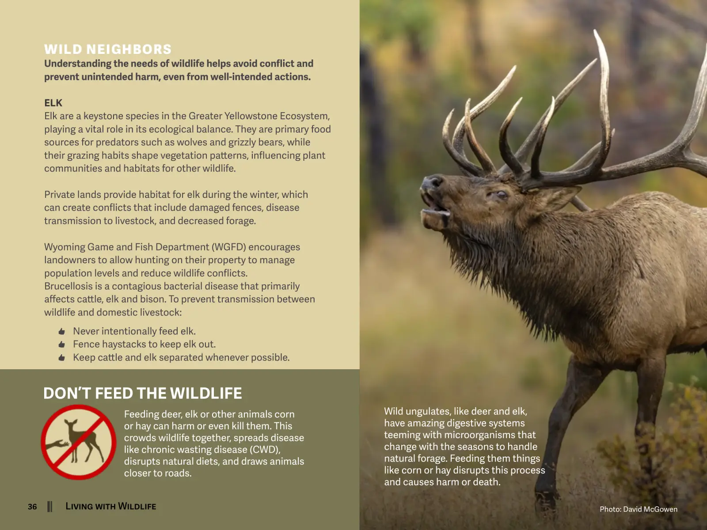
WILD NEIGHBORS
Understanding the needs of wildlife helps avoid conflict and prevent unintended harm, even from well-intended actions. ELK Elk are a keystone species in the Greater Yellowstone Ecosystem, playing a vital role in its ecological balance. They are primary food sources for predators such as wolves and grizzly bears, while their grazing habits shape vegetation patterns, influencing plant communities and habitats for other wildlife. Private lands provide habitat for elk during the winter, which can create conflicts that include damaged fences, disease transmission to livestock, and decreased forage. Wyoming Game and Fish Department (WGFD) encourages landowners to allow hunting on their property to manage population levels and reduce wildlife conflicts. Brucellosis is a contagious bacterial disease that primarily affects cattle, elk and bison. To prevent transmission between wildlife and domestic livestock: ΄ Never intentionally feed elk. ΄ Fence haystacks to keep elk out. ΄ Keep cattle and elk separated whenever possible.
DON’T FEED THE WILDLIFE Feeding deer, elk or other animals corn or hay can harm or even kill them. This crowds wildlife together, spreads disease like chronic wasting disease (CWD), disrupts natural diets, and draws animals closer to roads.
Wild ungulates, like deer and elk, have amazing digestive systems teeming with microorganisms that change with the seasons to handle natural forage. Feeding them things like corn or hay disrupts this process and causes harm or death.
-
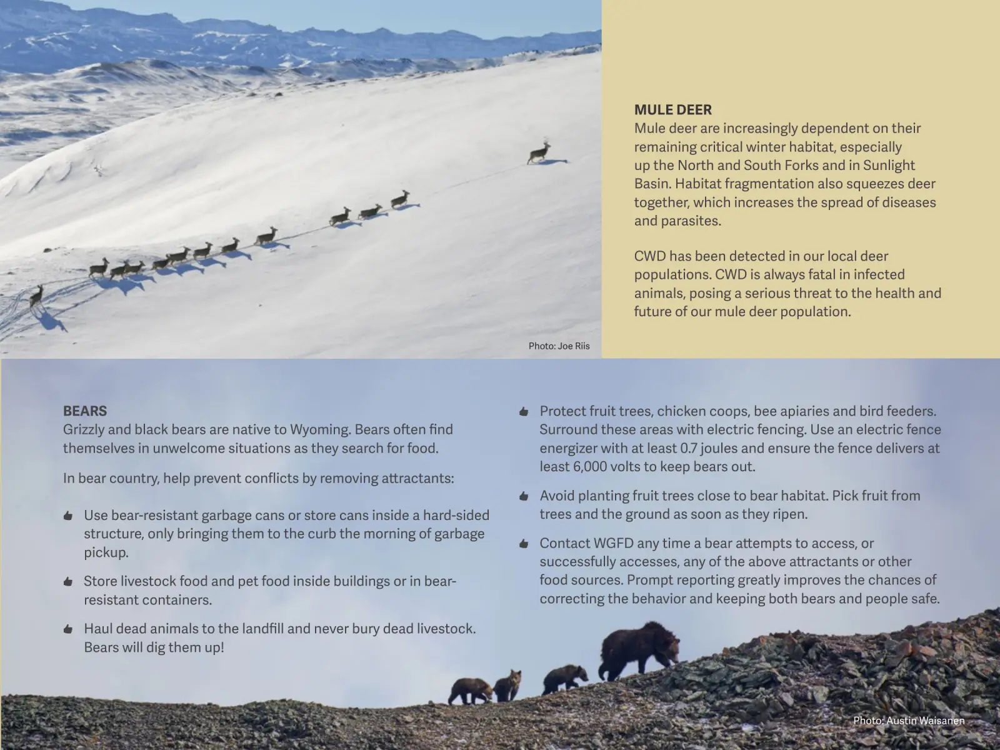
MULE DEER Mule deer are increasingly dependent on their remaining critical winter habitat, especially up the North and South Forks and in Sunlight Basin. Habitat fragmentation also squeezes deer together, which increases the spread of diseases and parasites. CWD has been detected in our local deer populations. CWD is always fatal in infected animals, posing a serious threat to the health and future of our mule deer population. Photo: Joe Riis
BEARS Grizzly and black bears are native to Wyoming. Bears often find themselves in unwelcome situations as they search for food. In bear country, help prevent conflicts by removing attractants: ΄ Use bear-resistant garbage cans or store cans inside a hard-sided structure, only bringing them to the curb the morning of garbage pickup. ΄ Store livestock food and pet food inside buildings or in bearresistant containers. ΄ Haul dead animals to the landfill and never bury dead livestock. Bears will dig them up!
΄ Protect fruit trees, chicken coops, bee apiaries and bird feeders. Surround these areas with electric fencing. Use an electric fence energizer with at least 0.7 joules and ensure the fence delivers at least 6,000 volts to keep bears out. ΄ Avoid planting fruit trees close to bear habitat. Pick fruit from trees and the ground as soon as they ripen. ΄ Contact WGFD any time a bear attempts to access, or successfully accesses, any of the above attractants or other food sources. Prompt reporting greatly improves the chances of correcting the behavior and keeping both bears and people safe.
-
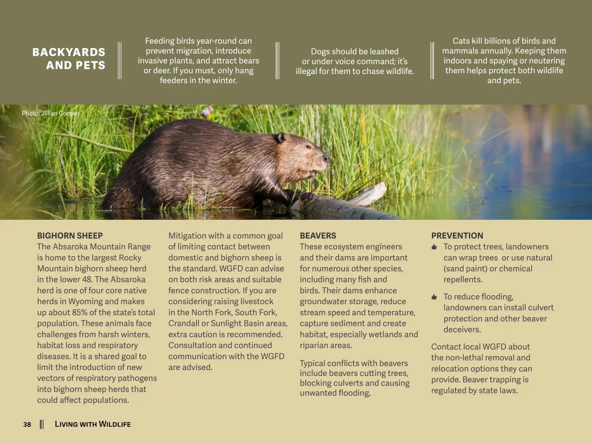
To protect trees, landowners can wrap trees or use natural (sand paint) or chemical repellents. (opens in a new tab)BACKYARDS AND PETS
Feeding birds year-round can prevent migration, introduce invasive plants, and attract bears or deer. If you must, only hang feeders in the winter.
Dogs should be leashed or under voice command; it’s illegal for them to chase wildlife.
Cats kill billions of birds and mammals annually. Keeping them indoors and spaying or neutering them helps protect both wildlife and pets.
Photo: Jillian Cooper
BIGHORN SHEEP The Absaroka Mountain Range is home to the largest Rocky Mountain bighorn sheep herd in the lower 48. The Absaroka herd is one of four core native herds in Wyoming and makes up about 85% of the state’s total population. These animals face challenges from harsh winters, habitat loss and respiratory diseases. It is a shared goal to limit the introduction of new vectors of respiratory pathogens into bighorn sheep herds that could affect populations.
Mitigation with a common goal of limiting contact between domestic and bighorn sheep is the standard. WGFD can advise on both risk areas and suitable fence construction. If you are considering raising livestock in the North Fork, South Fork, Crandall or Sunlight Basin areas, extra caution is recommended. Consultation and continued communication with the WGFD are advised.
BEAVERS These ecosystem engineers and their dams are important for numerous other species, including many fish and birds. Their dams enhance groundwater storage, reduce stream speed and temperature, capture sediment and create habitat, especially wetlands and riparian areas. Typical conflicts with beavers include beavers cutting trees, blocking culverts and causing unwanted flooding.
PREVENTION ΄ To protect trees, landowners can wrap trees or use natural (sand paint) or chemical repellents. ΄ To reduce flooding, landowners can install culvert protection and other beaver deceivers. Contact local WGFD about the non-lethal removal and relocation options they can provide. Beaver trapping is regulated by state laws.
-
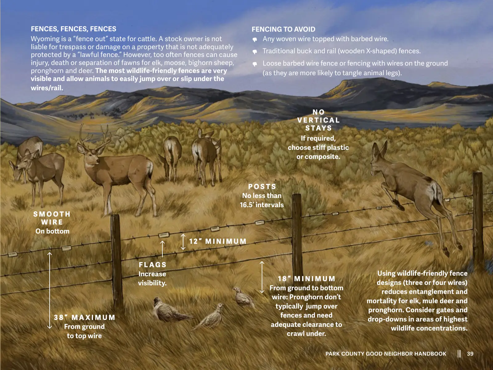
FENCES, FENCES, FENCES Wyoming is a “fence out” state for cattle. A stock owner is not liable for trespass or damage on a property that is not adequately protected by a “lawful fence.” However, too often fences can cause injury, death or separation of fawns for elk, moose, bighorn sheep, pronghorn and deer. The most wildlife-friendly fences are very visible and allow animals to easily jump over or slip under the wires/rail.
FENCING TO AVOID ΅ Any woven wire topped with barbed wire. ΅ Traditional buck and rail (wooden X-shaped) fences. ΅ Loose barbed wire fence or fencing with wires on the ground (as they are more likely to tangle animal legs).
NO VERTICAL S TAY S If required, choose stiff plastic or composite.
POSTS No less than 16.5’ intervals SMOOTH WIRE On bottom 12” MINIMUM FLAGS Increase visibility.
38” MAXIMUM From ground to top wire
18” MINIMUM From ground to bottom wire: Pronghorn don’t typically jump over fences and need adequate clearance to crawl under.
Using wildlife-friendly fence designs (three or four wires) reduces entanglement and mortality for elk, mule deer and pronghorn. Consider gates and drop-downs in areas of highest wildlife concentrations.
-
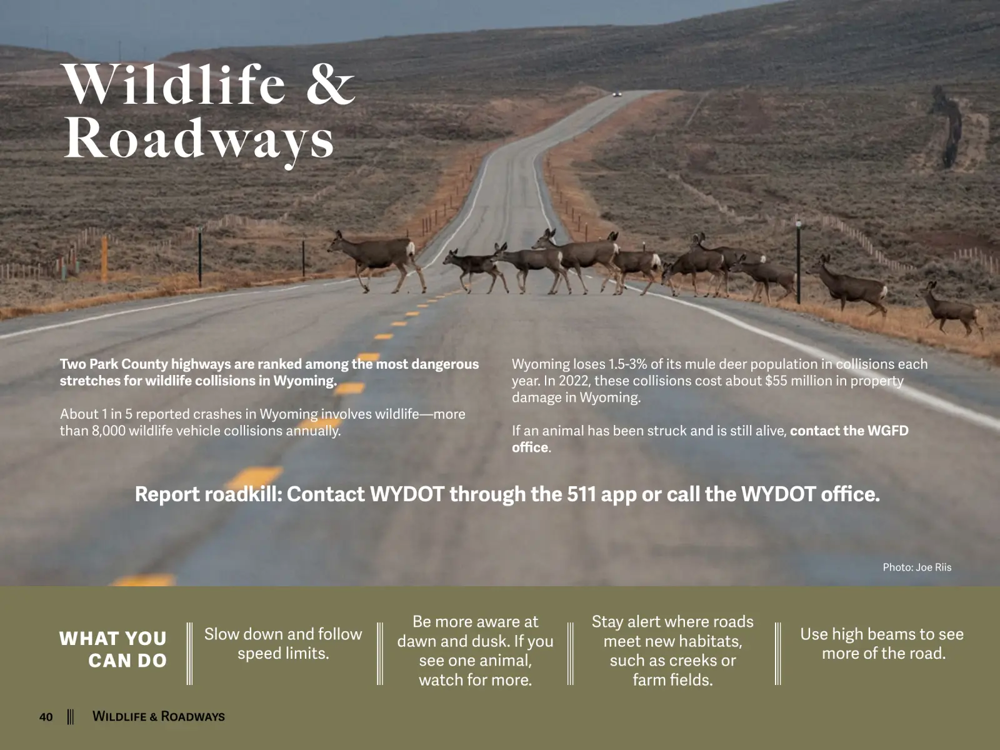
Wildlife & Roadways
Two Park County highways are ranked among the most dangerous stretches for wildlife collisions in Wyoming. About 1 in 5 reported crashes in Wyoming involves wildlife—more than 8,000 wildlife vehicle collisions annually.
Wyoming loses 1.5-3% of its mule deer population in collisions each year. In 2022, these collisions cost about $55 million in property damage in Wyoming. If an animal has been struck and is still alive, contact the WGFD office.
Report roadkill: Contact WYDOT through the 511 app or call the WYDOT office.
Photo: Joe Riis
WHAT YOU CAN DO
Slow down and follow speed limits.
Be more aware at dawn and dusk. If you see one animal, watch for more.
Stay alert where roads meet new habitats, such as creeks or farm fields.
Use high beams to see more of the road.
-
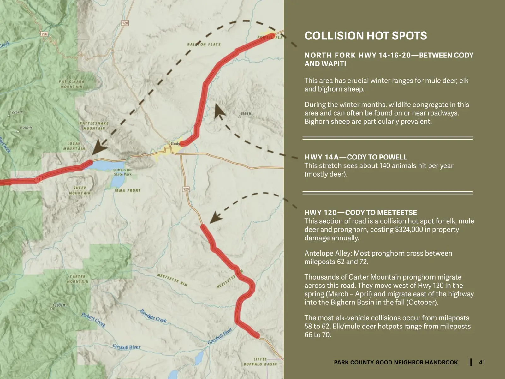
COLLISION HOT SPOTS N O RT H F O R K H W Y 14 -16-20 — BETWEEN CODY AND WAPITI This area has crucial winter ranges for mule deer, elk and bighorn sheep. During the winter months, wildlife congregate in this area and can often be found on or near roadways. Bighorn sheep are particularly prevalent.
H W Y 14 A — CODY TO POWELL This stretch sees about 140 animals hit per year (mostly deer).
HW Y 120 — CODY TO MEETEETSE This section of road is a collision hot spot for elk, mule deer and pronghorn, costing $324,000 in property damage annually. Antelope Alley: Most pronghorn cross between mileposts 62 and 72. Thousands of Carter Mountain pronghorn migrate across this road. They move west of Hwy 120 in the spring (March – April) and migrate east of the highway into the Bighorn Basin in the fall (October). The most elk-vehicle collisions occur from mileposts 58 to 62. Elk/mule deer hotpots range from mileposts 66 to 70.
-
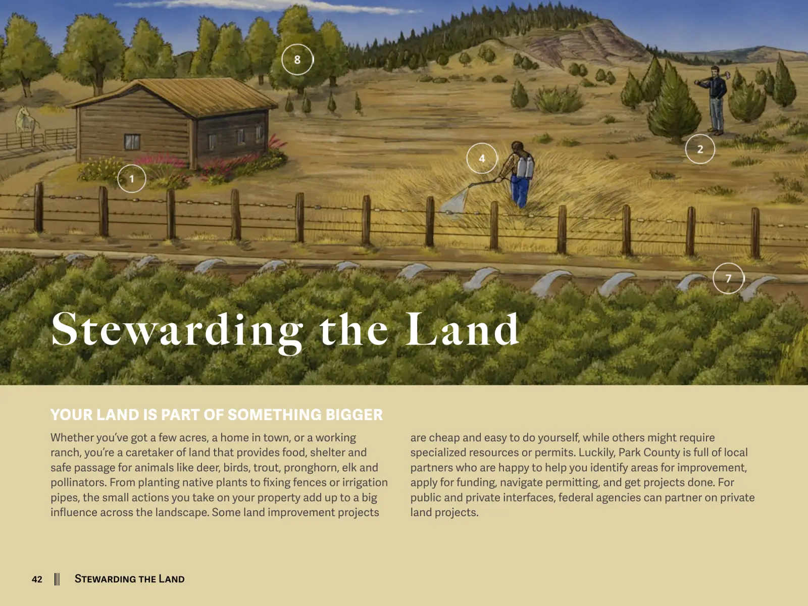
Stewarding the L and YOUR LAND IS PART OF SOMETHING BIGGER Whether you’ve got a few acres, a home in town, or a working ranch, you’re a caretaker of land that provides food, shelter and safe passage for animals like deer, birds, trout, pronghorn, elk and pollinators. From planting native plants to fixing fences or irrigation pipes, the small actions you take on your property add up to a big influence across the landscape. Some land improvement projects
are cheap and easy to do yourself, while others might require specialized resources or permits. Luckily, Park County is full of local partners who are happy to help you identify areas for improvement, apply for funding, navigate permitting, and get projects done. For public and private interfaces, federal agencies can partner on private land projects.
-
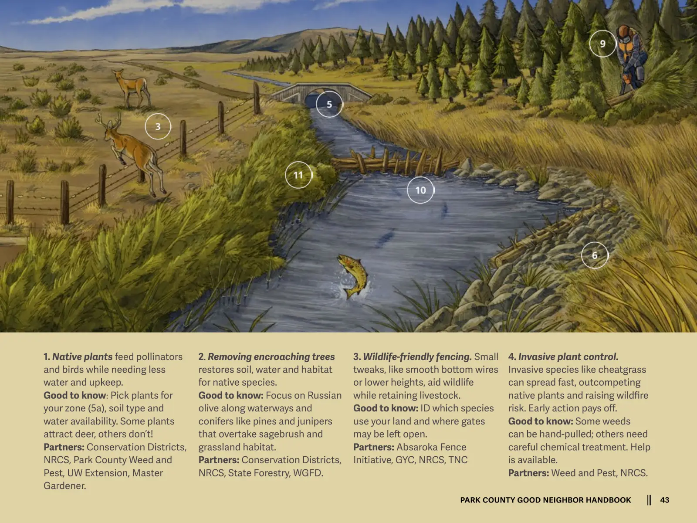
1. Native plants feed pollinators and birds while needing less water and upkeep. Good to know: Pick plants for your zone (5a), soil type and water availability. Some plants attract deer, others don’t! Partners: Conservation Districts, NRCS, Park County Weed and Pest, UW Extension, Master
2. Removing encroaching trees restores soil, water and habitat for native species. Good to know: Focus on Russian olive along waterways and conifers like pines and junipers that overtake sagebrush and grassland habitat. Partners: Conservation Districts, NRCS, State Forestry, WGFD.
3. Wildlife-friendly fencing. Small tweaks, like smooth bottom wires or lower heights, aid wildlife while retaining livestock. Good to know: ID which species use your land and where gates may be left open. Partners: Absaroka Fence Initiative, GYC, NRCS, TNC
4. Invasive plant control. Invasive species like cheatgrass can spread fast, outcompeting native plants and raising wildfire risk. Early action pays off. Good to know: Some weeds can be hand-pulled; others need careful chemical treatment. Help is available. Partners: Weed and Pest, NRCS.
-
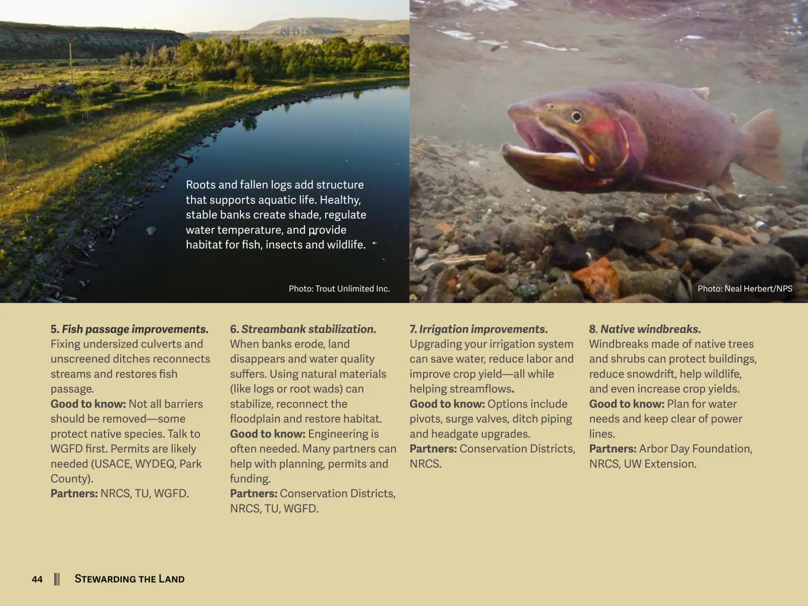
Roots and fallen logs add structure that supports aquatic life. Healthy, stable banks create shade, regulate water temperature, and provide habitat for fish, insects and wildlife.
Photo: Trout Unlimited Inc.
5. Fish passage improvements. Fixing undersized culverts and unscreened ditches reconnects streams and restores fish passage. Good to know: Not all barriers should be removed—some protect native species. Talk to WGFD first. Permits are likely needed (USACE, WYDEQ, Park County). Partners: NRCS, TU, WGFD.
6. Streambank stabilization. When banks erode, land disappears and water quality suffers. Using natural materials (like logs or root wads) can stabilize, reconnect the floodplain and restore habitat. Good to know: Engineering is often needed. Many partners can help with planning, permits and funding. Partners: Conservation Districts, NRCS, TU, WGFD.
Photo: Neal Herbert/NPS
7. Irrigation improvements. Upgrading your irrigation system can save water, reduce labor and improve crop yield—all while helping streamflows. Good to know: Options include pivots, surge valves, ditch piping and headgate upgrades. Partners: Conservation Districts, NRCS.
8. Native windbreaks. Windbreaks made of native trees and shrubs can protect buildings, reduce snowdrift, help wildlife, and even increase crop yields. Good to know: Plan for water needs and keep clear of power lines. Partners: Arbor Day Foundation, NRCS, UW Extension.
-
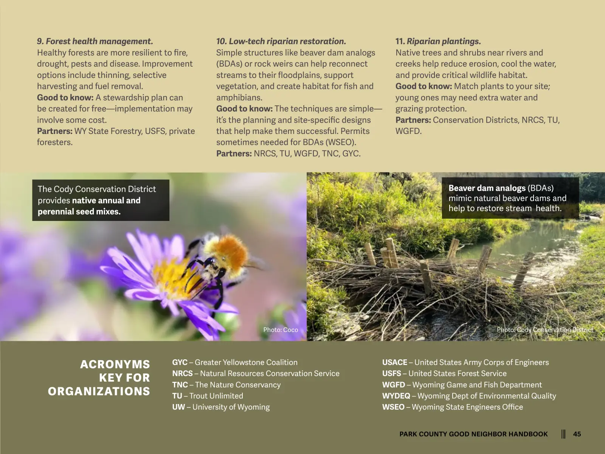
9. Forest health management. Healthy forests are more resilient to fire, drought, pests and disease. Improvement options include thinning, selective harvesting and fuel removal. Good to know: A stewardship plan can be created for free—implementation may involve some cost. Partners: WY State Forestry, USFS, private foresters.
10. Low-tech riparian restoration. Simple structures like beaver dam analogs (BDAs) or rock weirs can help reconnect streams to their floodplains, support vegetation, and create habitat for fish and amphibians. Good to know: The techniques are simple— it’s the planning and site-specific designs that help make them successful. Permits sometimes needed for BDAs (WSEO). Partners: NRCS, TU, WGFD, TNC, GYC.
Beaver dam analogs (BDAs) mimic natural beaver dams and help to restore stream health.
The Cody Conservation District provides native annual and perennial seed mixes.
Photo: Coco
ACRONYMS KEY FOR ORGANIZATIONS
11. Riparian plantings. Native trees and shrubs near rivers and creeks help reduce erosion, cool the water, and provide critical wildlife habitat. Good to know: Match plants to your site; young ones may need extra water and grazing protection. Partners: Conservation Districts, NRCS, TU, WGFD.
GYC – Greater Yellowstone Coalition NRCS – Natural Resources Conservation Service TNC – The Nature Conservancy TU – Trout Unlimited UW – University of Wyoming
Photo: Cody Conservation District
USACE – United States Army Corps of Engineers USFS – United States Forest Service WGFD – Wyoming Game and Fish Department WYDEQ – Wyoming Dept of Environmental Quality WSEO – Wyoming State Engineers Office
-
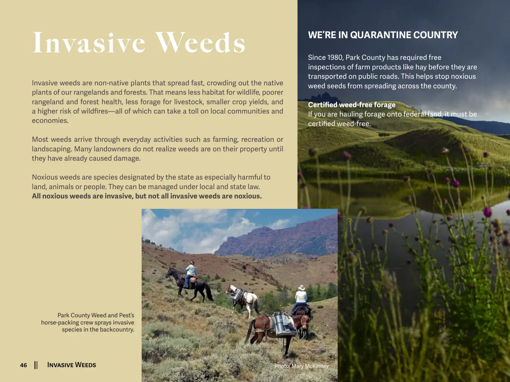
Inva sive Weeds Invasive weeds are non-native plants that spread fast, crowding out the native plants of our rangelands and forests. That means less habitat for wildlife, poorer rangeland and forest health, less forage for livestock, smaller crop yields, and a higher risk of wildfires—all of which can take a toll on local communities and economies. Most weeds arrive through everyday activities such as farming, recreation or landscaping. Many landowners do not realize weeds are on their property until they have already caused damage. Noxious weeds are species designated by the state as especially harmful to land, animals or people. They can be managed under local and state law. All noxious weeds are invasive, but not all invasive weeds are noxious.
Park County Weed and Pest’s horse-packing crew sprays invasive species in the backcountry.
WE’RE IN QUARANTINE COUNTRY Since 1980, Park County has required free inspections of farm products like hay before they are transported on public roads. This helps stop noxious weed seeds from spreading across the county. Certified weed-free forage If you are hauling forage onto federal land, it must be certified weed-free.
-
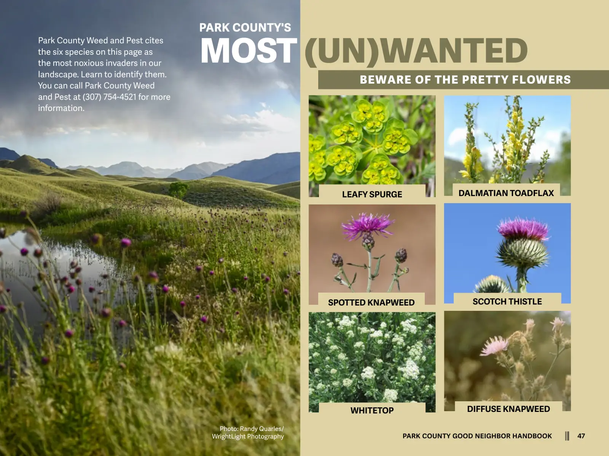
PARK COUNTY'S Park County Weed and Pest cites the six species on this page as the most noxious invaders in our landscape. Learn to identify them. You can call Park County Weed and Pest at (307) 754-4521 for more information.
MOST (UN)WANTED BEWARE OF THE PRETTY FLOWERS
LEAFY SPURGE
DALMATIAN TOADFLAX
SPOTTED KNAPWEED
SCOTCH THISTLE
WHITETOP
DIFFUSE KNAPWEED
-
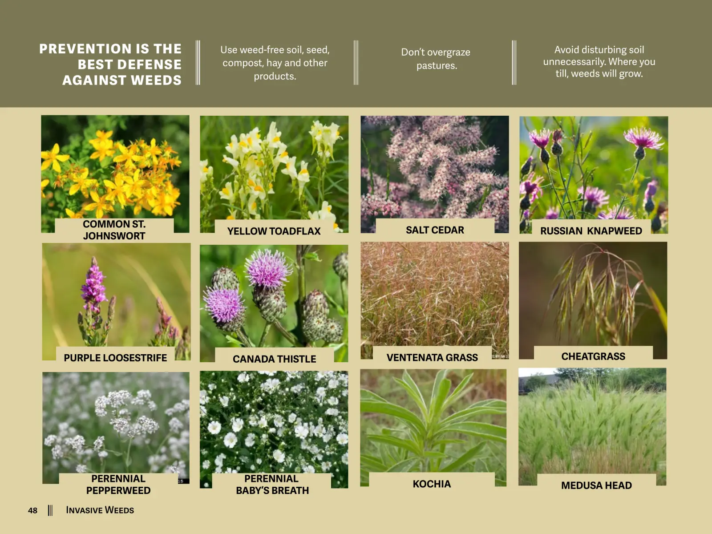
PREVENTION IS THE BEST DEFENSE AGAINST WEEDS
Use weed-free soil, seed, compost, hay and other products.
Don’t overgraze pastures.
Avoid disturbing soil unnecessarily. Where you till, weeds will grow.
COMMON ST. JOHNSWORT
YELLOW TOADFLAX
SALT CEDAR
RUSSIAN KNAPWEED
PURPLE LOOSESTRIFE
CANADA THISTLE
VENTENATA GRASS
CHEATGRASS
PERENNIAL
PERENNIAL
KOCHIA
MEDUSA HEAD
-
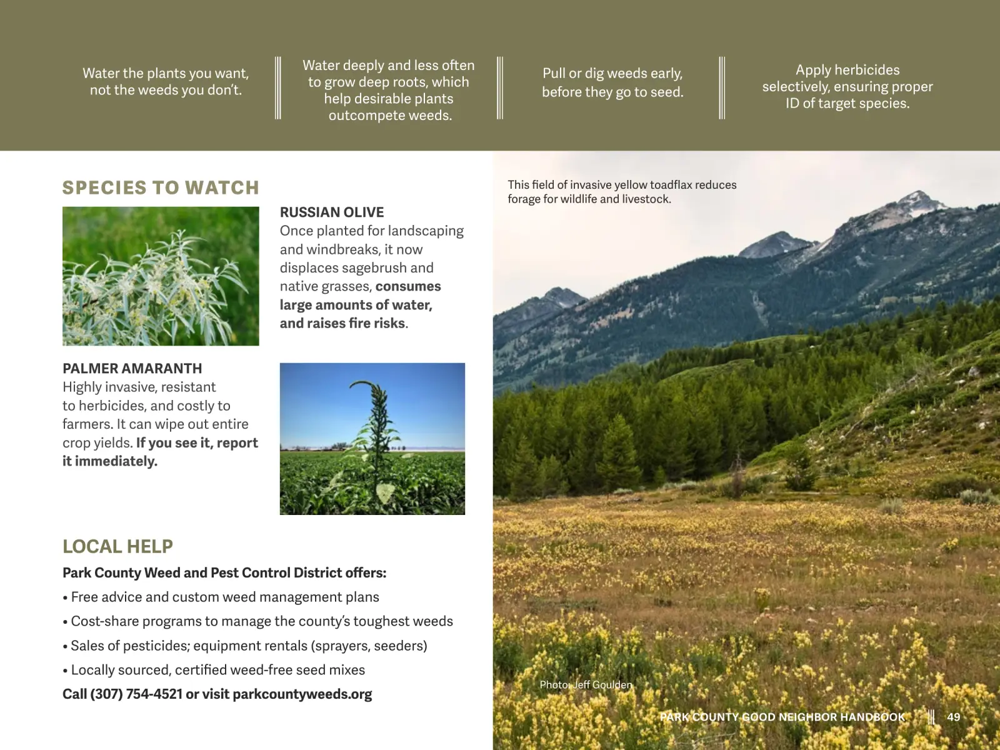
Water the plants you want, not the weeds you don’t.
Water deeply and less often to grow deep roots, which help desirable plants outcompete weeds.
SPECIES TO WATCH RUSSIAN OLIVE Once planted for landscaping and windbreaks, it now displaces sagebrush and native grasses, consumes large amounts of water, and raises fire risks.
Pull or dig weeds early, before they go to seed.
This field of invasive yellow toadflax reduces forage for wildlife and livestock.
PALMER AMARANTH Highly invasive, resistant to herbicides, and costly to farmers. It can wipe out entire crop yields. If you see it, report it immediately.
LOCAL HELP Park County Weed and Pest Control District offers: • Free advice and custom weed management plans • Cost-share programs to manage the county’s toughest weeds • Sales of pesticides; equipment rentals (sprayers, seeders) • Locally sourced, certified weed-free seed mixes Photo: Jeff Goulden
Apply herbicides selectively, ensuring proper ID of target species.
-
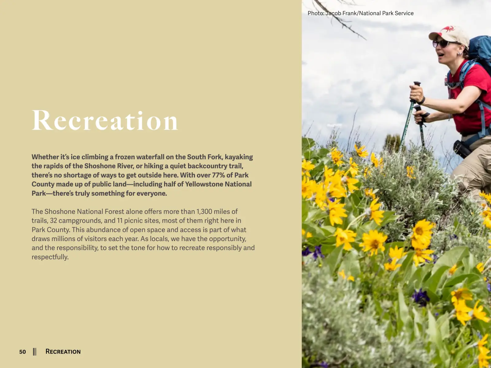
Photo: Jacob Frank/National Park Service
Recreation Whether it’s ice climbing a frozen waterfall on the South Fork, kayaking the rapids of the Shoshone River, or hiking a quiet backcountry trail, there’s no shortage of ways to get outside here. With over 77% of Park County made up of public land—including half of Yellowstone National Park—there’s truly something for everyone. The Shoshone National Forest alone offers more than 1,300 miles of trails, 32 campgrounds, and 11 picnic sites, most of them right here in Park County. This abundance of open space and access is part of what draws millions of visitors each year. As locals, we have the opportunity, and the responsibility, to set the tone for how to recreate responsibly and respectfully.
-
RESPECTING THE LAND Just because land looks open doesn’t mean it’s public. Before you head out, check ownership with the Park County Map Server or apps like OnX. Knowing where you stand and getting permission keeps you safe and respectful of neighbors.
-
RECREATE RESPONSIBLY Common sense and courtesy help keep everyone safe. ΄ Maintain proper viewing distance from all wildlife—100 yards from predators and 25 from all other species. ΄ Store food properly and never feed wildlife. ΄ Always carry bear spray. ΄ Dogs must be leashed or under voice control. ΄ Fully extinguish all campfires. ΄ Prepare for extreme weather and emergencies. ΄ Stay on marked trails. ΄ Pass on the left and allow faster hikers to pass you. ΄ If you pack it in, pack it out. ΄ Clean all gear and vehicles before and after recreating to prevent the spread of weeds. ΄ Leave gates as you find them. ΄ Only ride off-road vehicles (ORVs) on designated trails and roads. Do not ride on muddy trails or in sensitive riparian areas.
-
HUNTING AND FISHING Hunting, fishing and most types of boating are regulated by the Wyoming Game and Fish Department (WGFD). You’ll need a license for all hunting, trapping and fishing activities, and most require a conservation stamp as well. Season dates, limits and other regulations are available on WGFD’s website. Use lead-free ammo. Lead ammo in gut piles can harm and kill wildlife like golden eagles, and can injure humans, when lead fragments end up in the processed game meat. PUBLIC ACCESS WGFD manages special access programs. Public Access Areas provide long-term or permanent opportunities for fishing or hunting on certain lands. Hunter Management Areas are private parcels where access is allowed with a permission slip from WGFD. For details, reach out to the WGFD Cody Region.
Photo: Andrew Geiger
SAFETY FIRST If you’re hunting, remember that fluorescent orange or pink is required on at least one piece of outer clothing. Bright colors also help hikers and other recreationists stay visible during hunting season. Whenever possible, recreate with friends; there’s safety in numbers. Consider carrying a safety beacon that can be used to alert authorities in case of an emergency. Some cell phones can still dial 911 without service. BE A RESPONSIBLE NEIGHBOR Releasing pets—whether birds, goldfish or horses—may feel harmless, but it damages ecosystems, creates challenges for your neighbors, and is unfair to the animal. Please be a good neighbor and a responsible pet owner: Don’t let it loose.
-
YES
Your watercraft is motorized. Your watercraft is hard sided (i.e., not inflatable).
CLEAN Clean all plants, mud and debris from gear and equipment. Never move a plant or animal from one location to another.
Your watercraft is inflatable and over 10 feet in length.
DRAIN
DO I NEED AN
AQUATIC INVASIVE SPECIES DECAL? You have a paddleboard, regardless of length.
NOPE
You have a nonmotorized watercraft 10 feet or less in length. You have anything that is considered a water sports toy. You have an amphibious watercraft used both on water
PROTECT YOUR WATERS Our rivers and streams are home to native Yellowstone cutthroat trout. Invasive species threaten these and other wildlife. Wyoming has a strong aquatic invasive species (AIS) program. Be sure to follow all inspection and decontamination rules to help protect these waters. If you’re bringing a watercraft into Wyoming between March 1 and November 30, it must be inspected by an authorized inspector and display an AIS decal before it goes in the water. The same applies if your boat has been in zebra- or quagga-mussel–infested waters within the last 30 days.
Drain all water from your gear and equipment. This includes all types of watercraft, waders, boots, clothing, buckets— anything that comes in contact with the water. Leave wet compartments open to dry. Remove plugs during transport.
DRY Dry everything throughly. Dry for five days in the summer, 18 days in the spring and fall, or three days after freezing.
Photo: Nathan Allred
-
University of Wyoming’s Tools for Private Land Conservation p (opens in a new tab)Small Water Projects (opens in a new tab)Wyoming Game and Fish Department, Cody Office (opens in a new tab)
Photo: Brittany Swope
L andowner Toolkit Programs are available to help private landowners with land stewardship, management and infrastructure. University of Wyoming’s Tools for Private Land Conservation provides extensive information about these programs. Because they are all funding-dependent, availability can fluctuate over time. AQUATIC PROGRAMS – The Wyoming Water Development Commission collaborates to provide incentives for improving watershed condition and function. WWDC Small Water Projects | (307) 777-7626
CARBON MARKETS PAYMENTS – Carbon offset payments and carbon markets are emerging tools that compensate landowners for carbon sequestration or reduction through management practices. CARCASS REMOVAL – Contractors remove livestock carcasses to discourage the presence of predators. Wyoming Game and Fish Department, Cody Office | (307) 527-7125
-
Park County Open Lands ( (opens in a new tab)The Nature Conservancy (opens in a new tab)Wyoming Stock Growers Land Trust (opens in a new tab)Wyoming Game and Fish (opens in a new tab)WGFD, Cody Office (opens in a new tab)East Yellowstone Brucellosis Compensation Fund (opens in a new tab)Farm Service Agency (opens in a new tab)U.S. Fish and Wildlife Service (opens in a new tab)Access YES program. (opens in a new tab)WGFD, Cody Office (opens in a new tab)Park County Weed and Pest (opens in a new tab)Natural Resources Conservation Service (opens in a new tab)Virtual Fence Resource Guide (opens in a new tab)info@eastyellowstonecollaborative.org.A Wyoming Landowner’s Guide to Fences and Wildlife (opens in a new tab)absarokafenceinitiative@gmail.comWGFD Cody Office | (opens in a new tab)
CONSERVATION EASEMENTS – Voluntary, legal agreements between a private landowner and a qualified land trust or other conservation organization that permanently protect the land from development to safeguard its agricultural and conservation values. A conservation easement is an alternative to subdivision and development that allows a landowner to realize some of that value without actually developing the land. LAND TRUSTS OPERATING IN PARK COUNTY INCLUDE: Park County Open Lands (local) | (307) 202-8762 The Nature Conservancy (state) | (307) 332-2971 Wyoming Stock Growers Land Trust (state) | (307) 772-8751 Rocky Mountain Elk Foundation (state) | (406) 523-4500 DEPREDATION AND DAMAGE PAYMENTS – The Wyoming Game and Fish Department (WGFD) compensates ranchers for confirmed carnivore depredations of livestock and working dogs and can reimburse landowners for other wildlife-caused damages, such as excessive forage loss from elk, if specific criteria are met. WGFD, Cody Office | (307) 527-7125 DISEASE COMPENSATION FUND – Financial tools mitigate economic losses from wildlife-transmitted diseases. These agreements are typically administered by conservation organizations. For example, the East Yellowstone Brucellosis Compensation Fund reimburses ranchers for a portion of statemandated cattle quarantines. HABITAT LEASES – Temporary agreements compensate landowners for maintaining habitat. Farm Service Agency | (307) 754-9411 U.S. Fish and Wildlife Service | (307) 772-2374 HUNTER MANAGEMENT PROGRAMS – WGFD allows controlled access for hunters on private land through Hunter Management Areas and the Access YES program. WGFD, Cody Office | (307) 527-7125
INVASIVE PLANT MANAGEMENT AND NATIVE PLANT RESTORATION – Park County Weed and Pest District offers free advice and cost-share programs to manage weeds; sales of pesticides and equipment rentals; and certified weed-free seed mixes. Park County Weed and Pest | (307) 754-4521 TECHNICAL ASSISTANCE AND CONSERVATION SUPPORT – Helps landowners conserve soil, water, air and wildlife habitat through voluntary, science-based technical and financial assistance. Natural Resources Conservation Service (NRCS) | (307) 754-9411 SOIL & WATER TESTING – Local Conservation Districts: Cody | (307) 578-8335 Meeteetse | (307) 868-2484 Powell | (307) 271-3125 NRCS has a list of certified labs. | (307) 754-9411 VIRTUAL FENCING – This emerging technology can help livestock operators manage cattle without physical fencing. Find the GYC's Virtual Fence Resource Guide online or email info@eastyellowstonecollaborative.org. WILDLIFE-FRIENDLY FENCING – Fence designs that contain livestock while allowing wildlife to move and migrate more easily. A Wyoming Landowner’s Guide to Fences and Wildlife is online. NRCS provides cost-share. | (307) 754-9411 Absaroka Fence Initiative | absarokafenceinitiative@gmail.com WGFD Cody Office | (307) 527-7125
-
Park County Public Works (opens in a new tab)Wyoming Department of Transportation (opens in a new tab)U.S. Army Corps of Engineers Wyoming Offices (opens in a new tab)Wyoming Department of Environmental Quality (opens in a new tab)Cody Conservation District (opens in a new tab)Meeteetse Conservation District (opens in a new tab)Powell-Clarks Fork Conservation District (opens in a new tab)Big Horn Basin Farmers Market (opens in a new tab)Cody Farmers Market (opens in a new tab)Meeteetse Farmers Market (opens in a new tab)Wyoming State Forestry Division (opens in a new tab)Park County Fire District (opens in a new tab)Meeteetse Fire Department (opens in a new tab)Wyoming State Fire Marshal’s Office (opens in a new tab)UW Backyards & Barnyards (opens in a new tab)Rangeland Plant Guide (opens in a new tab)Park County Weed and Pest (opens in a new tab)Park County Sheriff’s Office (opens in a new tab)Cody Recycling Center (opens in a new tab)Powell Valley Recycling (opens in a new tab)Park County Search and Rescue (opens in a new tab)NRCS (opens in a new tab)Park County Complex (opens in a new tab)Park County Fairgrounds (opens in a new tab)Bighorn Water Systems (opens in a new tab)Energy Labs | (opens in a new tab)Wyoming Game and Fish (opens in a new tab)
Additional Res ources BEFORE YOU BUILD One Call of Wyoming Dial 8-1-1 before you dig. Outside City Limits: Park County Planning and Zoning Building and use permits, septic systems, subdivisions and project planning. 1002 Sheridan Ave., Cody, WY | (307) 527-8540 Inside City Limits: Municipal permitting authority Building and use permits, building codes and project planning. Park County Public Works Public roads and access 1131 11th St., Cody, WY | (307) 527-8520 Wyoming Department of Transportation If you access your property directly off of a state highway | (307) 777-4375 MAJOR CONSTRUCTION U.S. Army Corps of Engineers Wyoming Offices Check for regulated wetlands Regulatory Office/Permits | (307) 772-2300 Wyoming Department of Environmental Quality Large water and septic systems, air quality, mining, etc. | (307) 777-7937 CONSERVATION DISTRICTS Cody Conservation District 1501 Stampede Ave., Ste. 3290, Cody, WY (307) 578-8335 Meeteetse Conservation District 1906 State St., Meeteetse, WY (307) 868-2484 Powell-Clarks Fork Conservation District 1017 Hwy 14A, Powell, WY | (307) 754-9301
FARMERS MARKETS Big Horn Basin Farmers Market W. 2nd St., Powell, WY | (307) 899-2660 Cody Farmers Market Beck Ave & 14th St., Cody, WY Meeteetse Farmers Market Meeteetse, WY | (307) 868-2587 FORESTRY Wyoming State Forestry Division P.O. Box 248, Cody, WY | (307) 823-3864 FIRE Park County Fire District 1125 11th St., Cody, WY | (307) 527-8550 Meeteetse Fire Department 940 Park Ave., Meeteetse, WY | (307) 868-2627 Wyoming State Fire Marshal’s Office Electrical and fire plans for homes and businesses (307) 777-7288 HABITAT STEWARDSHIP UW Backyards & Barnyards Rangeland Plant Guide (invasive species) Park County Weed and Pest 1067 Road 13, Powell, WY | (307) 754-4521 LAW ENFORCEMENT Park County Sheriff’s Office 1402 River View Dr., Cody, WY | (307) 527-8700
RECYCLING Cody Recycling Center 531 15th St., Cody, WY | (307) 587-2958 Powell Valley Recycling 946 Road 10, Powell, WY | (307) 754-9773 SEARCH AND RESCUE Park County Search and Rescue 721 15th St., Cody, WY | (307) 527-8749 SOIL HEALTH Natural Resources Conservation Service - NRCS 1017 US-14 ALT, Powell, WY | (307) 754-9411 UW EXTENSION PARK COUNTY Park County Complex 1501 Stampede Ave., Ste. 2220, Cody, WY | (307) 527-8560 Park County Fairgrounds 655 East 5th St., Powell, WY | (307) 754-8836 WELL WATER TESTING Get your water tested by a certified lab. Bighorn Water Systems | (307) 586-4161 Energy Labs | (406) 252-6325 WILDLIFE MANAGEMENT Wyoming Game and Fish Department 2 Tilden Trail, Cody, WY | (307) 527-7125
-
Acknowledgments This handbook was created by East Yellowstone Collaborative with robust support from many in our community.
ADDITIONAL CONTENT CONTRIBUTORS
FUNDING PARTNERS
Bureau of Reclamation Lynn Johnson Houze, Cody Historian Natural Resources Conservation Service Park County Archives Park County Conservation Districts Park County Planning and Zoning Park County Weed and Pest Ruckelshaus Institute Shoshone Irrigation District University of Wyoming Extension Wild Sheep Foundation Wyoming Department of Transportation Wyoming Game and Fish Department Wyoming State Engineer’s Office Wyoming Wool Growers Association
Anne Young Anonymous Beyond Yellowstone Living Lab Greater Yellowstone Coalition Knobloch Family Foundation LegacyWorks Group Linda and Reid Murchison Park County Open Lands Park County Weed and Pest The Nature Conservancy-Wyoming National Association of REALTORS® Northwest Wyoming Board of REALTORS® DESIGN AND ILLUSTRATION Western Landowners Alliance Bantam Design
This handbook is merely informative and not a regulatory document. The information provided is not intended to constitute legal advice. All information, content and materials available are for general informational purposes only. Information in this handbook may not constitute the most up-to-date legal or other information. Please refer to current town, county, state and federal laws, rules, resolutions or regulations for an exact representation of the law. Any links or references to an outside organization are provided only for convenience, and the contributors of this handbook do not recommend or endorse any third-party sites or organizations, or any of the products, services or opinions thereof.